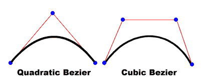

| Package | Top Level |
| Class | public dynamic class MovieClip |
| Inheritance | MovieClip |
| Player version: | Flash Player 3 |
You do not use a constructor method to create a movie clip. You can choose from among three methods to create movie clip instances:
attachMovie() method allows you to create a movie clip instance based on a movie clip symbol that exists in the library.createEmptyMovieClip() method allows you to create an empty movie clip instance as a child based on another movie clip.duplicateMovieClip() method allows you to create a movie clip instance based on another movie clip.To call the methods of the MovieClip class you reference movie clip instances by name, using the following syntax, where my_mc is a movie clip instance:
my_mc.play();my_mc.gotoAndPlay(3);
You can extend the methods and event handlers of the MovieClip class by creating a subclass.
The MovieClip class is the base class for Flex components. However, while Adobe supports some of the MovieClip interface for use in Flex applications, much of the interface has been overridden by Flex.
If you modify any of the following properties of a MovieClip object that contains a motion tween, Flash Player stops the playhead in that MovieClip object: _alpha, blendMode, filters, _height, opaqueBackground, _rotation, scale9Grid, scrollRect, transform, _visible, _width, _x, _xscale, _y, or _yscale. However, it does not stop the playhead in any child MovieClip objects of that MovieClip object.
| Property | ||
|---|---|---|
| _alpha : Number
The alpha transparency value of the movie clip.
|
||
| blendMode : Object
The blend mode for this movie clip.
|
||
| cacheAsBitmap : Boolean
If set to
true, Flash Player caches an internal bitmap representation of the movie clip. |
||
| _currentframe : Number
[read-only]Returns the number of the frame in which the playhead is located in the movie clip's timeline.
|
||
| _droptarget : String
[read-only]Returns the absolute path in slash-syntax notation of the movie clip instance on which this movie clip was dropped.
|
||
| enabled : Boolean
A Boolean value that indicates whether a movie clip is enabled.
|
||
| filters : Array
An indexed array containing each filter object currently associated with the movie clip.
|
||
| focusEnabled : Boolean
Specifies whether you can programmatically assign focus to a movie clip using Selection.setFocus().
|
||
| _focusrect : Boolean
A Boolean value that specifies whether a movie clip has a yellow rectangle around it when it has keyboard focus.
|
||
| forceSmoothing : Boolean
A Boolean value that determines whether images that are added through the
loadMovie() method and are in the same hierarchy level as the movie clip are smoothed when scaled. |
||
| _framesloaded : Number
[read-only]The number of frames that are loaded from a streaming SWF file.
|
||
| _height : Number
The height of the movie clip, in pixels.
|
||
| _highquality : Number
Deprecated since Flash Player 7 — This property was deprecated in favor of
MovieClip._quality. |
||
| hitArea : Object
Designates another movie clip to serve as the hit area for a movie clip.
|
||
| _lockroot : Boolean
A Boolean value that specifies what
_root refers to when a SWF file is loaded into a movie clip. |
||
| menu : ContextMenu
Associates the specified ContextMenu object with the movie clip.
|
||
| _name : String
The instance name of the movie clip.
|
||
| opaqueBackground : Number
The color of the movie clip's opaque (not transparent) background of the color specified by the number (an RGB hexadecimal value).
|
||
| _parent : MovieClip
A reference to the movie clip or object that contains the current movie clip or object.
|
||
| _quality : String
Sets or retrieves the rendering quality used for a SWF file.
|
||
| _rotation : Number
Specifies the rotation of the movie clip, in degrees, from its original orientation.
|
||
| scale9Grid : Rectangle
The rectangular region that defines the nine scaling regions for the movie clip.
|
||
| scrollRect : Object
The
scrollRect property allows you to quickly scroll movie clip content and have a window viewing larger content. |
||
| _soundbuftime : Number
Specifies the number of seconds a sound prebuffers before it starts to stream.
|
||
| tabChildren : Boolean
Determines whether the children of a movie clip are included in the automatic tab ordering.
|
||
| tabEnabled : Boolean
Specifies whether the movie clip is included in automatic tab ordering.
|
||
| tabIndex : Number
Lets you customize the tab ordering of objects in a movie.
|
||
| _target : String
[read-only]Returns the target path of the movie clip instance, in slash notation.
|
||
| _totalframes : Number
[read-only]The total number of frames in the movie clip instance.
|
||
| trackAsMenu : Boolean
A Boolean value that indicates whether other buttons or movie clips can receive mouse release events.
|
||
| transform : Transform
An object with properties pertaining to a movie clip's matrix, color transform, and pixel bounds.
|
||
| _url : String
[read-only]Retrieves the URL of the SWF, JPEG, GIF, or PNG file from which the movie clip was downloaded.
|
||
| useHandCursor : Boolean
A Boolean value that indicates whether the pointing hand (hand cursor) appears when the mouse rolls over a movie clip.
|
||
| _visible : Boolean
A Boolean value that indicates whether the movie clip is visible.
|
||
| _width : Number
The width of the movie clip, in pixels.
|
||
| _x : Number
An integer that sets the x coordinate of a movie clip relative to the local coordinates of the parent movie clip.
|
||
| _xmouse : Number
[read-only]Returns the x coordinate of the mouse position.
|
||
| _xscale : Number
Determines the horizontal scale (
percentage) of the movie clip as applied from the registration point of the movie clip. |
||
| _y : Number
Sets the y coordinate of a movie clip relative to the local coordinates of the parent movie clip.
|
||
| _ymouse : Number
[read-only]Indicates the y coordinate of the mouse position.
|
||
| _yscale : Number
Sets the vertical scale (
percentage) of the movie clip as applied from the registration point of the movie clip. |
||
| Properties inherited from class Object | |
|---|---|
__proto__, __resolve, constructor, prototype |
| Method | ||
|---|---|---|
|
attachAudio(id:Object):Void
Specifies the audio source to be played.
|
||
|
Attaches a bitmap image to a movie clip.
|
||
|
Takes a symbol from the library and attaches it to the movie clip.
|
||
|
Fills a drawing area with a bitmap image.
|
||
|
Indicates the beginning of a new drawing path.
|
||
|
beginGradientFill(fillType:String, colors:Array, alphas:Array, ratios:Array, matrix:Object, [spreadMethod:String], [interpolationMethod:String], [focalPointRatio:Number]):Void
Indicates the beginning of a new drawing path.
|
||
|
clear():Void
Removes all the graphics created during runtime by using the movie clip draw methods, including line styles specified with
MovieClip.lineStyle(). |
||
|
Creates an empty movie clip as a child of an existing movie clip.
|
||
|
createTextField(instanceName:String, depth:Number, x:Number, y:Number, width:Number, height:Number):TextField
Creates a new, empty text field as a child of the movie clip on which you call this method.
|
||
|
Draws a curve using the current line style from the current drawing position to (
anchorX, anchorY) using the control point that ((controlX, controlY) specifies. |
||
|
Creates an instance of the specified movie clip while the SWF file is playing.
|
||
|
endFill():Void
Applies a fill to the lines and curves that were since the last call to
beginFill() or beginGradientFill(). |
||
|
Returns properties that are the minimum and maximum x and y coordinate values of the movie clip, based on the
bounds parameter. |
||
|
Returns the number of bytes that have already loaded (streamed) for the movie clip.
|
||
|
Returns the size, in bytes, of the movie clip.
|
||
|
Returns the depth of the movie clip instance.
|
||
|
Determines if a particular depth is already occupied by a movie clip.
|
||
|
Determines a depth value that you can pass to
MovieClip.attachMovie(), MovieClip.duplicateMovieClip(), or MovieClip.createEmptyMovieClip() to ensure that Flash renders the movie clip in front of all other objects on the same level and layer in the current movie clip. |
||
|
Returns properties that are the minimum and maximum x and y coordinate values of the movie clip, based on the
bounds parameter, excluding any strokes on shapes. |
||
|
Returns an integer that indicates the Flash Player version for the movie clip was published.
|
||
|
Returns a TextSnapshot object that contains the text in all the static text fields in the specified movie clip; text in child movie clips is not included.
|
||
|
Loads a document from the specified URL into the specified window.
|
||
|
globalToLocal(pt:Object):Void
Converts the
pt object from Stage (global) coordinates to the movie clip's (local) coordinates. |
||
|
gotoAndPlay(frame:Object):Void
Starts playing the SWF file at the specified frame.
|
||
|
gotoAndStop(frame:Object):Void
Brings the playhead to the specified frame of the movie clip and stops it there.
|
||
|
Evaluates the movie clip to see if it overlaps or intersects with the hit area that the
target or x and y coordinate parameters identify. |
||
|
lineGradientStyle(fillType:String, colors:Array, alphas:Array, ratios:Array, matrix:Object, [spreadMethod:String], [interpolationMethod:String], [focalPointRatio:Number]):Void
Specifies a line style that Flash uses for subsequent calls to the
lineTo() and curveTo() methods until you call the lineStyle() method or the lineGradientStyle() method with different parameters. |
||
|
lineStyle(thickness:Number, rgb:Number, alpha:Number, pixelHinting:Boolean, noScale:String, capsStyle:String, jointStyle:String, miterLimit:Number):Void
Specifies a line style that Flash uses for subsequent calls to the
lineTo() and curveTo() methods until you call the lineStyle() method with different parameters. |
||
|
Draws a line using the current line style from the current drawing position to (x, y); the current drawing position is then set to (x, y).
|
||
|
Loads a SWF, JPEG, GIF, or PNG file into a movie clip in Flash Player while the original SWF file is playing.
|
||
|
Reads data from an external file and sets the values for variables in the movie clip.
|
||
|
localToGlobal(pt:Object):Void
Converts the
pt object from the movie clip's (local) coordinates to the Stage (global) coordinates. |
||
|
Moves the current drawing position to (x, y).
|
||
|
nextFrame():Void
Sends the playhead to the next frame and stops it.
|
||
|
play():Void
Moves the playhead in the timeline of the movie clip.
|
||
|
prevFrame():Void
Sends the playhead to the previous frame and stops it.
|
||
|
removeMovieClip():Void
Removes a movie clip instance created with
duplicateMovieClip(), MovieClip.duplicateMovieClip(), MovieClip.createEmptyMovieClip(), or MovieClip.attachMovie(). |
||
|
Makes the movie clip in the
mc parameter a mask that reveals the calling movie clip. |
||
|
Lets the user drag the specified movie clip.
|
||
|
stop():Void
Stops the movie clip that is currently playing.
|
||
|
stopDrag():Void
Ends a
MovieClip.startDrag() method. |
||
|
swapDepths(target:Object):Void
Swaps the stacking, or depth level (z-order), of this movie clip with the movie clip that is specified by the
target parameter or with the movie clip that currently occupies the depth level that is specified in the target parameter. |
||
|
unloadMovie():Void
Removes the contents of a movie clip instance.
|
||
| Methods inherited from class Object | |
|---|---|
addProperty, hasOwnProperty, isPropertyEnumerable, isPrototypeOf, registerClass, toString, unwatch, valueOf, watch |
| Event | Summary | Defined by | ||
|---|---|---|---|---|
|
onData = function() {}
| Invoked when a movie clip receives data from a MovieClip.loadVariables() call. | MovieClip | ||
|
onDragOut = function() {}
| Invoked when the mouse button is pressed and the pointer rolls outside the object. | MovieClip | ||
|
onDragOver = function() {}
| Invoked when the pointer is dragged outside and then over the movie clip. | MovieClip | ||
|
onEnterFrame = function() {}
| Invoked repeatedly at the frame rate of the SWF file. | MovieClip | ||
|
onKeyDown = function() {}
| Invoked when a movie clip has input focus and user presses a key. | MovieClip | ||
|
onKeyUp = function() {}
| Invoked when a key is released. | MovieClip | ||
|
onKillFocus = function(newFocus:Object) {}
| Invoked when a movie clip loses keyboard focus. | MovieClip | ||
|
onLoad = function() {}
| Invoked when the movie clip is instantiated and appears in the timeline. | MovieClip | ||
|
onMouseDown = function() {}
| Invoked when the mouse button is pressed. | MovieClip | ||
|
onMouseMove = function() {}
| Invoked when the mouse moves. | MovieClip | ||
|
onMouseUp = function() {}
| Invoked when the mouse button is released. | MovieClip | ||
|
onPress = function() {}
| Invoked when the user clicks the mouse while the pointer is over a movie clip. | MovieClip | ||
|
onRelease = function() {}
| Invoked when a user releases the mouse button over a movie clip. | MovieClip | ||
|
onReleaseOutside = function() {}
| Invoked after a user presses the mouse button inside the movie clip area and then releases it outside the movie clip area. | MovieClip | ||
|
onRollOut = function() {}
| Invoked when a user moves the pointer outside a movie clip area. | MovieClip | ||
|
onRollOver = function() {}
| Invoked when user moves the pointer over a movie clip area. | MovieClip | ||
|
onSetFocus = function(oldFocus:Object) {}
| Invoked when a movie clip receives keyboard focus. | MovieClip | ||
|
onUnload = function() {}
| Invoked in the first frame after the movie clip is removed from the Timeline. | MovieClip | ||
| _alpha | property |
public var _alpha:Number
| Player version: | Flash Player 4 |
The alpha transparency value of the movie clip. Valid values are 0 (fully transparent) to 100 (fully opaque). The default value is 100. Objects in a movie clip with _alpha set to 0 are active, even though they are invisible. For example, you can still click a button in a movie clip whose _alpha property is set to 0. To disable the button completely, you can set the movie clip's _visible property to false.
You can extend the methods and event handlers of the MovieClip class by creating a subclass.
See also
_alpha property of a dynamically created movie clip named triangle to 50% when the mouse rolls over the movie clip. Add the following ActionScript to your FLA or AS file:
this.createEmptyMovieClip("triangle", this.getNextHighestDepth());
triangle.beginFill(0x0000FF, 100);
triangle.moveTo(10, 10);
triangle.lineTo(10, 100);
triangle.lineTo(100, 10);
triangle.lineTo(10, 10);
triangle.onRollOver = function() {
this._alpha = 50;
};
triangle.onRollOut = function() {
this._alpha = 100;
};
The MovieClip.getNextHighestDepth() method used in this example requires Flash Player 7 or later. If your SWF file includes a version 2 component, use the version 2 components' DepthManager class instead of the MovieClip.getNextHighestDepth() method.
| blendMode | property |
public var blendMode:Object
| Player version: | Flash Player 8 |
The blend mode for this movie clip. The blend mode affects the appearance of the movie clip when it is in a layer above another object onscreen.
Flash Player applies the blendMode property on each pixel of the movie clip. Each pixel is composed of three constituent colors (red, green, and blue), and each constituent color has a value between 0x00 and 0xFF. Flash Player compares each constituent color of one pixel in the movie clip with the corresponding color of the pixel in the background. For example, if blendMode is set to "lighten", Flash Player compares the red value of the movie clip with the red value of the background, and uses the lighter of the two as the value for the red component of the displayed color.
The following table describes the blendMode settings. To set the blendMode property, you can use either an integer from 1 to 14 or a string. The illustrations in the table show blendMode values applied to a circular movie clip (2) superimposed on another onscreen object (1).


| Integer value | String value | Illustration | Description |
|---|---|---|---|
| 1 | "normal" |  | The movie clip appears in front of the background. Pixel values of the movie clip override those of the background. Where the movie clip is transparent, the background is visible. |
| 2 | "layer" |  | Forces the creation of a temporary buffer for precomposition for the movie clip. This is done automatically if there is more than one child object in a movie clip and a blendMode setting other than "normal" is selected for the child. |
| 3 | "multiply" |  | Multiplies the values of the movie clip constituent colors by those of the background color, and then normalizes by dividing by 0xFF, resulting in darker colors. This setting is commonly used for shadows and depth effects. For example, if a constituent color (such as red) of one pixel in the movie clip and the corresponding color of the pixel in the background both have the value 0x88, the multiplied result is 0x4840. Dividing by 0xFF yields a value of 0x48 for that constituent color, which is a darker shade than that of the movie clip or that of the background. |
| 4 | "screen" |  | Multiplies the complement (inverse) of the movie clip color by the complement of the background color, resulting in a bleaching effect. This setting is commonly used for highlights or to remove black areas of the movie clip. |
| 5 | "lighten" |  | Selects the lighter of the constituent colors of the movie clip and those of the background (the ones with the larger values). This setting is commonly used for superimposing type. For example, if the movie clip has a pixel with an RGB value of 0xFFCC33, and the background pixel has an RGB value of 0xDDF800, then the resulting RGB value for the displayed pixel is 0xFFF833 (because 0xFF > 0xDD, 0xCC < 0xF8, and 0x33 > 0x00 = 33). |
| 6 | "darken" |  | Selects the darker of the constituent colors of the movie clip and those of the background (the ones with the smaller values). This setting is commonly used for superimposing type. For example, if the movie clip has a pixel with an RGB value of 0xFFCC33, and the background pixel has an RGB value of 0xDDF800, the resulting RGB value for the displayed pixel is 0xDDCC00 (because 0xFF > 0xDD, 0xCC < 0xF8, and 0x33 > 0x00 = 33). |
| 7 | "difference" |  | Compares the constituent colors of the movie clip with those of its background, and subtracts the darker of the values of the two constituent colors from the lighter one. This setting is commonly used for more vibrant colors. For example, if the movie clip has a pixel with a RGB value of 0xFFCC33, and the background pixel has an RGB value of 0xDDF800, the resulting RGB value for the displayed pixel is 0x222C33 (because 0xFF - 0xDD = 0x22, 0xF8 - 0xCC = 0x2C, and 0x33 - 0x00 = 0x33). |
| 8 | "add" |  | Adds the values of the constituent colors of the movie clip to those of its background, applying a ceiling of 0xFF. This setting is commonly used for animating a lightening dissolve between two objects. For example, if the movie clip has a pixel with an RGB value of 0xAAA633, and the background pixel has an RGB value of 0xDD2200, the resulting RGB value for the displayed pixel is 0xFFC833 (because 0xAA + 0xDD > 0xFF, 0xA6 + 0x22 = 0xC8, and 0x33 + 0x00 = 0x33). |
| 9 | "subtract" |  | Subtracts the values of the constituent colors in the movie clip from those of the background, applying a floor of 0. This setting is commonly used for animating a darkening dissolve between two objects. For example, if the movie clip has a pixel with an RGB value of 0xAA2233, and the background pixel has an RGB value of 0xDDA600, the resulting RGB value for the displayed pixel is 0x338400 (because 0xDD - 0xAA = 0x33, 0xA6 - 0x22 = 0x84, and 0x00 - 0x33 < 0x00). |
| 10 | "invert" |  | Inverts the background. |
| 11 | "alpha" |  | Applies the alpha value of each pixel of the movie clip to the background. This requires the "layer" blendMode setting to be applied to a parent movie clip. For example, in the illustration, the parent movie clip, which is a white background, has blendMode = "layer". |
| 12 | "erase" |  | Erases the background based on the alpha value of the movie clip. This requires the "layer" blendMode to be applied to a parent movie clip. For example, in the illustration, the parent movie clip, which is a white background, has blendMode = "layer". |
| 13 | "overlay" |  | Adjusts the color of each bitmap based on the darkness of the background. If the background is lighter than 50% gray, the movie clip and background colors are screened, which results in a lighter color. If the background is darker than 50% gray, the colors are multiplied, which results in a darker color. This setting is commonly used for shading effects. |
| 14 | "hardlight" |  | Adjusts the color of each bitmap based on the darkness of the movie clip. If the movie clip is lighter than 50% gray, the movie clip and background colors are screened, which results in a lighter color. If the movie clip is darker than 50% gray, the colors are multiplied, which results in a darker color. This setting is commonly used for shading effects. |
If you attempt to set the blendMode property to any other value, Flash Player sets it to "normal".
However, if you set the property to an integer, Flash Player converts the value to the corresponding string version:
this.createEmptyMovieClip("mclip", this.getNextHighestDepth());
mclip.blendMode = 8;
trace(mclip.blendMode) // add
"alpha" blend mode show up with an effect, the gradient for the mc2 movie clip includes a range of alpha ratios, and the "layer" blend mode is applied to the parent movie clip (this.blendMode="layer").
this.createEmptyMovieClip("mc1", this.getNextHighestDepth());
this.createEmptyMovieClip("mc2", this.getNextHighestDepth());
this.blendMode="layer";
this.createTextField("blendLabel", this.getNextHighestDepth(), 50, 150, 100, 100)
fillClip(mc1, 0x00AA00, 0x22FFFF, 100, 100)
fillClip(mc2, 0xFF0000, 0x2211FF, 100, 50)
mc2._x = 33;
mc2._y = 33;
var blendModeIndex = 0;
setInterval(changeBlendMode, 1000);
function changeBlendMode()
{
mc2.blendMode = blendModeIndex % 14 + 1 ;
// values 1 - 14
blendLabel.text = (blendModeIndex% 14 + 1) + ": " + mc2.blendMode;
blendModeIndex++;
}
function fillClip(mc:MovieClip, color1:Number, color2:Number,
alpha1:Number, alpha2: Number)
{
matrix = {a:100, b:0, c:0, d:0, e:100, f:0, g:50, h:20, i:1};
mc.beginGradientFill("linear", [color1, color2], [alpha1, alpha2], [0, 0xFF], matrix);
mc.lineStyle(8,0x888888,100)
mc.moveTo(0, 0);
mc.lineTo(0, 100);
mc.lineTo(100, 100);
mc.lineTo(100, 0);
mc.lineTo(0, 0);
mc.endFill();
}
If your SWF file includes a version 2 component, use the version 2 components' DepthManager class instead of the MovieClip.getNextHighestDepth() method, which is used in the previous example.
| cacheAsBitmap | property |
public var cacheAsBitmap:Boolean
| Player version: | Flash Player 8 |
If set to true, Flash Player caches an internal bitmap representation of the movie clip. This can increase performance for movie clips that contain complex vector content.
All vector data for a movie clip that has a cached bitmap is drawn to the bitmap instead of to the main Stage. The bitmap is then copied to the main Stage as unstretched, unrotated pixels snapped to the nearest pixel boundaries. Pixels are mapped one to one with the parent object. If the bounds of the bitmap change, the bitmap is recreated instead of being stretched.
No internal bitmap is created unless the cacheAsBitmap property is set to true.
After you set a movie clip's cacheAsBitmap property to true, the rendering does not change, however the movie clip performs pixel snapping automatically. The animation speed can be significantly faster, depending on the complexity of the vector content.
The cacheAsBitmap property is automatically set to true whenever you apply a filter to a movie clip (when its filter array is not empty). If a movie clip has a filter applied to it, cacheAsBitmap is reported as true for that movie clip, even if you set the property to false. If you clear all filters for a movie clip, the cacheAsBitmap setting changes to what it was last set to.
In the following cases a movie clip does not use a bitmap even if the cacheAsBitmap property is set to true, and instead renders the movie clip from vector data:
The cacheAsBitmap property is best used with movie clips that have mostly static content and that do not scale and rotate frequently. With such movie clips, cacheAsBitmap can lead to performance increases when the movie clip is translated (when its x and y position is changed).
See also
cacheAsBitmap property which is set to true when a filter is applied.
import flash.filters.DropShadowFilter;
var container:MovieClip = setUpShape();
trace(container.cacheAsBitmap); // false
var dropShadow:DropShadowFilter = new DropShadowFilter(6, 45, 0x000000, 50, 5, 5, 1, 2, false, false, false);
container.filters = new Array(dropShadow);
trace(container.cacheAsBitmap); // true
function setUpShape():MovieClip {
var mc:MovieClip = this.createEmptyMovieClip("container", this.getNextHighestDepth());
mc._x = 10;
mc._y = 10;
var w:Number = 50;
var h:Number = 50;
mc.beginFill(0xFFCC00);
mc.lineTo(w, 0);
mc.lineTo(w, h);
mc.lineTo(0, h);
mc.lineTo(0, 0);
mc.endFill();
return mc;
}
| _currentframe | property |
_currentframe:Number [read-only]
| Player version: | Flash Player 4 |
Returns the number of the frame in which the playhead is located in the movie clip's timeline.
Implementation public function get _currentframe():Number
_currentframe property to direct the playhead of the actionClip_mc movie clip to advance five frames ahead of its current location:
actionClip_mc.gotoAndStop(actionClip_mc._currentframe + 5);
| _droptarget | property |
_droptarget:String [read-only]
| Player version: | Flash Player 4 |
Returns the absolute path in slash-syntax notation of the movie clip instance on which this movie clip was dropped. The _droptarget property always returns a path that starts with a slash (/). To compare the _droptarget property of an instance to a reference, use the eval() function to convert the returned value from slash syntax to a dot-syntax reference.
Note: You must perform this conversion if you are using ActionScript 2.0, which does not support slash syntax.
Note: This method is only supported in Macromedia Flash Lite if System.capabilities.hasMouse is true or System.capabilities.hasStylus is true.
public function get _droptarget():String
See also
_droptarget property of the garbage_mc movie clip instance and uses eval() to convert it from slash syntax to a dot syntax reference. The garbage_mc reference is then compared to the reference to the trashcan_mc movie clip instance. If the two references are equivalent, the visibility of garbage_mc is set to false. If they are not equivalent, the garbage instance resets to its original position.
origX = garbage_mc._x;
origY = garbage_mc._y;
garbage_mc.onPress = function() {
this.startDrag();
};
garbage_mc.onRelease = function() {
this.stopDrag();
if (eval(this._droptarget) == trashcan_mc) {
this._visible = false;
} else {
this._x = origX;
this._y = origY;
}
};
| enabled | property |
public var enabled:Boolean
| Player version: | Flash Player 6 |
A Boolean value that indicates whether a movie clip is enabled. The default value of enabled is true. If enabled is set to false, the movie clip's callback methods and on action event handlers are no longer invoked, and the Over, Down, and Up frames are disabled. The enabled property does not affect the Timeline of the movie clip; if a movie clip is playing, it continues to play. The movie clip continues to receive movie clip events (for example, mouseDown, mouseUp, keyDown, and keyUp).
The enabled property only governs the button-like properties of a movie clip. You can change the enabled property at any time; the modified movie clip is immediately enabled or disabled. The enabled property can be read out of a prototype object. If enabled is set to false, the object is not included in automatic tab ordering.
circle_mc movie clip when the user clicks it:
circle_mc.onRelease = function() {
trace("disabling the "+this._name+" movie clip.");
this.enabled = false;
};
| filters | property |
public var filters:Array
| Player version: | Flash Player 8 |
An indexed array containing each filter object currently associated with the movie clip. The flash.filters package contains several classes that define specific filters you can use.
Filters can be applied in the Flash authoring tool at design-time, or at runtime using ActionScript code. To apply a filter using ActionScript, you must make a temporary copy of the entire MovieClip.filters array, modify the temporary array, and then assign the value of the temporary array back to the MovieClip.filters array. You cannot directly add a new filter object to the MovieClip.filters array.
To add a filter using ActionScript, you must follow the following steps (assume that the target movie clip is named myMC):
myMC.filters array to a temporary array, such as one named myFilters.myFilters.myMC.filters array.If the filters array is empty, you need not use a temporary array. Instead, you can directly assign an array literal that contains one or more filter objects that you created.
To modify an existing filter object, whether it was created at design-time or at runtime, you must use the technique of modifying a copy of the filters array:
myMC.filters array to a temporary array, such as one named myFilters.myFilters. For example, if you want to set the quality property of the first filter in the array, you could use the following code: myList[0].quality = 1;myMC.filters array.To clear the filters for a movie clip, set filters to an empty array ([]).
At load time, if a movie clip has an associated filter, it is marked to cache itself as a transparent bitmap. From this point forward, as long as the movie clip has a valid filter list, the player caches the movie clip as a bitmap. This source bitmap is used as a source image for the filter effects. Each movie clip usually has two bitmaps: one with the original unfiltered source movie clip and another for the final image after filtering. The final image is used when rendering. As long as the movie clip does not change, the final image does not need updating.
If you are working with a filters array that contains multiple filters and you need to track the type of filter assigned to each array index, you can maintain your own filters array and use a separate data structure to track the type of filter associated with each array index. There is no simple way to determine the type of filter associated with each filters array index.
See also
myMC: var myDropFilter = new flash.filters.DropShadowFilter(); var myFilters:Array = myMC.filters; myFilters.push(myDropFilter); myMC.filters = myFilters;
The following example changes the quality setting of the first filter in the array to 15 (this example works only if at least one filter object has been associated with the myMC movie clip):
var myList:Array = myMC.filters; myList[0].quality = 15; myMC.filters = myList;
Note: Since you cannot directly add a new filter object to the MovieClip.filters array, the following code has no effect on the target movie clip, named myMC:
myMC.filters.push(myDropShadow);
| focusEnabled | property |
public var focusEnabled:Boolean
| Player version: | Flash Player 6 |
Specifies whether you can programmatically assign focus to a movie clip using Selection.setFocus(). If the focusEnabled property is set to false or is undefined (the default), you cannot assign focus to a movie clip with Selection.setFocus() unless that movie clip has defined one of following event handlers: onDragOut, onDragOver, onPress, onRelease, onReleaseOutside, onRollOut, or onRollOver.
If the focusEnabled property is set to true, you can use Selection.setFocus() to assign focus to a movie clip even when none of the event handlers is defined.
Do not confuse the focusEnabled property with the tabEnabled property. The tabEnabled property controls whether a movie clip can be assigned focus with the Tab key, and has no effect on the Selection.setFocus() method, while the focusEnabled property has no effect on keyboard navigation.
See also
focusEnabled property for the movie clip my_mc to false: my_mc.focusEnabled = false;
| _focusrect | property |
public var _focusrect:Boolean
| Player version: | Flash Player 6 |
A Boolean value that specifies whether a movie clip has a yellow rectangle around it when it has keyboard focus. This property can override the global _focusrect property. The default value of the _focusrect property of a movie clip instance is null; this means that the movie clip instance does not override the global _focusrect property. If the _focusrect property of a movie clip instance is set to true or false, it overrides the setting of the global _focusrect property for the single movie clip instance.
In Flash Player 4 or Flash Player 5 SWF files, the _focusrect property controls the global _focusrect property. It is a Boolean value. This behavior was changed in Flash Player 6 and later to permit the customization of _focusrect on an individual movie-clip basis.
If the _focusrect property is set to false, keyboard navigation for that movie clip is limited to the Tab key. All other keys, including the Enter and arrow keys, are ignored. To restore full keyboard navigation, you must set _focusrect to true.
See also
mc1_mc, mc2_mc, and mc3_mc, and add the following ActionScript on Frame 1 of the Timeline:
mc1_mc._focusrect = true;
mc2_mc._focusrect = false;
mc3_mc._focusrect = true;
mc1_mc.onRelease = traceOnRelease;
mc3_mc.onRelease = traceOnRelease;
function traceOnRelease() {
trace(this._name);
}
Test the SWF file in a browser window by selecting File > Publish Preview > HTML. Give the SWF focus by clicking it in the browser window, and press Tab to focus each instance. You cannot execute code for this movie clip in the browser by pressing Enter or the Spacebar when _focusrect is disabled.
Additionally, you can test your SWF file in the test environment. Select Control > Disable Keyboard Shortcuts from the main menu in the test environment. This allows you to view the focus rectangle around the instances in the SWF file.
| forceSmoothing | property |
public var forceSmoothing:Boolean
| Player version: | Flash Player 9 |
A Boolean value that determines whether images that are added through the loadMovie() method and are in the same hierarchy level as the movie clip are smoothed when scaled. Setting forceSmoothing to true decreases rendering performance. The default value is false.
| _framesloaded | property |
_framesloaded:Number [read-only]
| Player version: | Flash Player 4 |
The number of frames that are loaded from a streaming SWF file. This property is useful for determining whether the contents of a specific frame, and all the frames before it, are loaded and are available locally in the browser. It is also useful for monitoring the downloading of large SWF files. For example, you might want to display a message to users indicating that the SWF file is loading until a specified frame in the SWF file has finished loading.
Implementation public function get _framesloaded():Number
See also
_framesloaded property to start a SWF file when all the frames are loaded. If all the frames aren't loaded, the _xscale property of the bar_mc movie clip instance is increased proportionally to create a progress bar. Enter the following ActionScript in Frame 1 of the Timeline:
var pctLoaded:Number = Math.round(this.getBytesLoaded()/this.getBytesTotal()*100); bar_mc._xscale = pctLoaded;
Add the following code on Frame 2:
if (this._framesloaded < this._totalframes) {
this.gotoAndPlay(1);
} else {
this.gotoAndStop(3);
}
Place your content on or after Frame 3. Then add the following code on Frame 3:
stop();
| _height | property |
public var _height:Number
| Player version: | Flash Player 4 |
The height of the movie clip, in pixels.
See also
this.createEmptyMovieClip("image_mc", this.getNextHighestDepth());
var image_mcl:MovieClipLoader = new MovieClipLoader();
var mclListener:Object = new Object();
mclListener.onLoadInit = function(target_mc:MovieClip) {
trace(target_mc._name+" = "+target_mc._width+" X "+target_mc._height+" pixels");
};
image_mcl.addListener(mclListener);
image_mcl.loadClip("example.jpg", image_mc);
The MovieClip.getNextHighestDepth() method used in this example requires Flash Player 7 or later. If your SWF file includes a version 2 component, use the version 2 components' DepthManager class instead of the MovieClip.getNextHighestDepth() method.
The MovieClipLoader class used in this example requires Flash Player 7 or later.
| _highquality | property |
public var _highquality:NumberDeprecated since Flash Player 7 — This property was deprecated in favor of MovieClip._quality.| Player version: | Flash Player 6 |
Specifies the level of anti-aliasing applied to the current SWF file. Specify 2 (best quality) to apply high quality with bitmap smoothing always on. Specify 1 (high quality) to apply anti-aliasing; this smooths bitmaps if the SWF file does not contain animation. Specify 0 (low quality) to prevent anti-aliasing. This property can overwrite the global _highquality property.
See also
my_mc._highquality = 2;
| hitArea | property |
public var hitArea:Object
| Player version: | Flash Player 6 |
Designates another movie clip to serve as the hit area for a movie clip. If the hitArea property does not exist or the value is null or undefined, the movie clip itself is used as the hit area. The value of the hitArea property may be a reference to a movie clip instance.
You can change the hitArea property at any time; the modified movie clip immediately uses the new hit area behavior. The movie clip designated as the hit area does not need to be visible; its graphical shape, although not visible, is still detected as the hit area.
See also
circle_mc movie clip as the hit area for the square_mc movie clip. Place these two movie clips on the Stage and test the document. When you click circle_mc, the square_mc movie clip traces that it was clicked.
square_mc.hitArea = circle_mc;
square_mc.onRelease = function() {
trace("hit! "+this._name);
};
You can also set the circle_mc movie clip visible property to false to hide the hit area for square_mc.
circle_mc._visible = false;
| _lockroot | property |
public var _lockroot:Boolean
| Player version: | Flash Player 7 |
A Boolean value that specifies what _root refers to when a SWF file is loaded into a movie clip. The _lockroot property is undefined by default. You can set this property within the SWF file that is being loaded or in the handler that is loading the movie clip.
For example, suppose you have a document called Games.fla that lets a user choose a game to play, and loads the game (for example, Chess.swf) into the game_mc movie clip. Make sure that, after being loaded into Games.swf, any use of _root in Chess.swf refers to _root in Chess.swf (not _root in Games.swf). If you have access to Chess.fla and publish it to Flash Player 7 or later, you can add this statement to Chess.fla on the main Timeline:
this._lockroot = true;
If you don't have access to Chess.fla (for example, if you are loading Chess.swf from someone else's site into chess_mc), you can set the Chess.swf _lockroot property when you load it. Place the following ActionScript on the main Timeline of Games.fla:
chess_mc._lockroot = true;
When calling loadMovie(), set the MovieClip._lockroot property to true in the loader movie, as the following code shows. If you don't set _lockroot to true in the loader movie, any references to _root in the loaded movie point to the _root of the loader instead of the _root of the loaded movie:
myMovieClip._lockroot = true;
See also
_lockroot applied to the main SWF file. If the SWF file is loaded into another FLA document, _root always refers to the scope of lockroot.swf, which helps prevent conflicts. Place the following ActionScript on the main Timeline of lockroot.fla:
this._lockroot = true;
_root.myVar = 1;
_root.myOtherVar = 2;
trace("from lockroot.swf");
for (i in _root) {
trace(" "+i+" -> "+_root[i]);
}
trace("");
which traces the following information:
from lockroot.swf myOtherVar -> 2 myVar -> 1 _lockroot -> true $version -> WIN 7,0,19,0
The following example loads two SWF files, lockroot.swf and nolockroot.swf. The lockroot.fla document contains the ActionScript from the preceding example. The nolockroot.fla file has the following code added to Frame 1 of the Timeline:
_root.myVar = 1;
_root.myOtherVar = 2;
trace("from nolockroot.swf");
for (i in _root) {
trace(" "+i+" -> "+_root[i]);
}
trace("");
The lockroot.swf file has _lockroot applied to it, and nolockroot.swf does not. After the files are loaded, each file outputs the values variables from their _root scopes. Place the following ActionScript on the main Timeline of a FLA document:
this.createEmptyMovieClip("lockroot_mc", this.getNextHighestDepth());
lockroot_mc.loadMovie("lockroot.swf");
this.createEmptyMovieClip("nolockroot_mc", this.getNextHighestDepth());
nolockroot_mc.loadMovie("nolockroot.swf");
function dumpRoot() {
trace("from current SWF file");
for (i in _root) {
trace(" "+i+" -> "+_root[i]);
}
trace("");
}
dumpRoot();
which traces the following information:
from current SWF file
dumpRoot -> [type Function]
$version -> WIN 7,0,19,0
nolockroot_mc -> _level0.nolockroot_mc
lockroot_mc -> _level0.lockroot_mc
from nolockroot.swf
myVar -> 1
i -> lockroot_mc
dumpRoot -> [type Function]
$version -> WIN 7,0,19,0
nolockroot_mc -> _level0.nolockroot_mc
lockroot_mc -> _level0.lockroot_mc
from lockroot.swf
myOtherVar -> 2
myVar -> 1
The file with no _lockroot applied also contains all of the other variables that the root SWF file contains. If you don't have access to the nolockroot.fla, you can use the following ActionScript added to the main Timeline to change the _lockroot in the preceding main FLA document:
this.createEmptyMovieClip("nolockroot_mc", this.getNextHighestDepth());
nolockroot_mc._lockroot = true;
nolockroot_mc.loadMovie("nolockroot.swf");
which then traces the following:
from current SWF file
dumpRoot -> [type Function]
$version -> WIN 7,0,19,0
nolockroot_mc -> _level0.nolockroot_mc
lockroot_mc -> _level0.lockroot_mc
from nolockroot.swf
myOtherVar -> 2
myVar -> 1
from lockroot.swf
myOtherVar -> 2
myVar -> 1
| menu | property |
public var menu:ContextMenu
| Player version: | Flash Player 7 |
Associates the specified ContextMenu object with the movie clip. The ContextMenu class lets you modify the context menu that appears when the user right-clicks (Windows) or Control-clicks (Macintosh) in Flash Player.
See also
menu_cm ContextMenu object to the image_mc movie clip. The ContextMenu object contains a custom menu item labeled "View Image in Browser" that has an associated function named viewImage():
var menu_cm:ContextMenu = new ContextMenu();
menu_cm.customItems.push(new ContextMenuItem("View Image in Browser...", viewImage));
this.createEmptyMovieClip("image_mc", this.getNextHighestDepth());
var mclListener:Object = new Object();
mclListener.onLoadInit = function(target_mc:MovieClip) {
target_mc.menu = menu_cm;
};
var image_mcl:MovieClipLoader = new MovieClipLoader();
image_mcl.addListener(mclListener);
image_mcl.loadClip("photo1.jpg", image_mc);
function viewImage(target_mc:MovieClip, obj:Object) {
getURL(target_mc._url, "_blank");
}
When you right-click (Windows) or Control-click (Macintosh) the image at runtime, select View Image in Browser from the context menu to open the image in a browser window.
| _name | property |
public var _name:String
| Player version: | Flash Player 4 |
The instance name of the movie clip.
See also
Info from the context menu to view information about that instance. Add several movie clips with instance names, and then add the following ActionScript to your AS or FLA file:
var menu_cm:ContextMenu = new ContextMenu();
menu_cm.customItems.push(new ContextMenuItem("Info...", getMCInfo));
function getMCInfo(target_mc:MovieClip, obj:Object) {
trace("You clicked on the movie clip '"+target_mc._name+"'.");
trace("\t width:"+target_mc._width+", height:"+target_mc._height);
trace("");
}
for (var i in this) {
if (typeof (this[i]) == 'movieclip') {
this[i].menu = menu_cm;
}
}
| opaqueBackground | property |
public var opaqueBackground:Number
| Player version: | Flash Player 8 |
The color of the movie clip's opaque (not transparent) background of the color specified by the number (an RGB hexadecimal value). If the value is null or undefined, there is no opaque background. For movie clips in which the cacheAsBitmap property is set to true, setting opaqueBackground can improve rendering performance.
You recognize a greater performance benefit with a movie clip that would have many transparent regions if opaqueBackground were not set.
Note:The opaque background region is not matched in a hitTest() method that has the shapeFlag parameter set to true.
See also
opaqueBackground property to a specific color:
var triangle:MovieClip = this.createEmptyMovieClip("triangle", this.getNextHighestDepth());
triangle._x = triangle._y = 50;
triangle.lineStyle(3, 0xFFCC00);
triangle.lineTo(0, 30);
triangle.lineTo(50, 0);
triangle.lineTo(0, 0);
triangle.endFill();
triangle.opaqueBackground = 0xCCCCCC;
If your SWF file includes a version 2 component, use the version 2 components' DepthManager class instead of the MovieClip.getNextHighestDepth() method, which is used in this example.
| _parent | property |
public var _parent:MovieClip
| Player version: | Flash Player 5 |
A reference to the movie clip or object that contains the current movie clip or object. The current object is the object that references the _parent property. Use the _parent property to specify a relative path to movie clips or objects that are above the current movie clip or object.
You can use _parent to move up multiple levels in the display list, as in the following code:
this._parent._parent._alpha = 20;
See also
my_mc, and add it to the main timeline. Add the following ActionScript to your FLA or AS file:
my_mc.onRelease = function() {
trace("You clicked the movie clip: "+this);
trace("The parent of "+this._name+" is: "+this._parent);
}
When you click the movie clip, the following information appears in the Output panel:When you click the movie clip, the following information writes to the log file:
You clicked the movie clip: _level0.my_mc
The parent of my_mc is: _level0
| _quality | property |
public var _quality:String
| Player version: | Flash Player 6 |
Sets or retrieves the rendering quality used for a SWF file. Device fonts are always aliased and therefore are unaffected by the _quality property.
You can set the _quality to the following values:
| Value | Description | Graphic anti-aliasing | Bitmap smoothing |
|---|---|---|---|
"LOW" | Low rendering quality. | Graphics are not anti-aliased. | Bitmaps are not smoothed. |
"MEDIUM" | Medium rendering quality. This setting is suitable for movies that do not contain text. | Graphics are anti-aliased using a 2 x 2 pixel grid. | Flash Player 8: Bitmaps are smoothed based on the smoothing parameter used in MovieClip.attachBitmap() and MovieClip.beginBitmapFill() calls. Flash Player 6 and 7: Bitmaps are not smoothed. |
"HIGH" | High rendering quality. This setting is the default rendering quality setting that Flash uses. | Graphics are anti-aliased using a 4 x 4 pixel grid. | Flash Player 8: Bitmaps are smoothed based on the smoothing parameter used in MovieClip.attachBitmap() and MovieClip.beginBitmapFill() calls. Flash Player 6 and 7: Bitmaps are smoothed if the movie clip is static. |
"BEST" | Very high rendering quality. | Graphics are anti-aliased using a 4 x 4 pixel grid. | Flash Player 8: Bitmaps are smoothed based on the smoothing parameter used in MovieClip.attachBitmap() and MovieClip.beginBitmapFill() calls. When the smoothing is set, the result renders with higher quality when the movie clip is scaled down, by using an averaging algorithm. This can slow down rendering, but it allows for applications such as high-quality thumbnails of large images. Flash Player 6 and 7: Bitmaps are always smoothed. |
Note: Although you can specify this property for a MovieClip instance, it is a global property, and you can specify its value simply as _quality. Setting the _quality for a MovieClip instance will set the quality for the entire SWF.
See also
my_mc to LOW: my_mc._quality = "LOW";
| _rotation | property |
public var _rotation:Number
| Player version: | Flash Player 4 |
Specifies the rotation of the movie clip, in degrees, from its original orientation. Values from 0 to 180 represent clockwise rotation; values from 0 to -180 represent counterclockwise rotation. Values outside this range are added to or subtracted from 360 to obtain a value within the range; for example, the statement my_mc._rotation = 450 is the same as my_mc._rotation = 90. For large values, greater than +/- 720, a multiple of 360 is used.
See also
triangle movie clip instance dynamically. When you run the SWF file, click the movie clip to rotate it.
this.createEmptyMovieClip("triangle", this.getNextHighestDepth());
triangle.beginFill(0x0000FF, 100);
triangle.moveTo(100, 100);
triangle.lineTo(100, 150);
triangle.lineTo(150, 100);
triangle.lineTo(100, 100);
triangle.onMouseUp= function() {
this._rotation += 15;
};
The MovieClip.getNextHighestDepth() method used in this example requires Flash Player 7 or later. If your SWF file includes a version 2 component, use the version 2 components' DepthManager class instead of the MovieClip.getNextHighestDepth() method.
| scale9Grid | property |
public var scale9Grid:Rectangle
| Language version: | ActionScript 2.0 |
| Player version: | Flash Player 8 |
The rectangular region that defines the nine scaling regions for the movie clip. If set to null, the entire movie clip scales normally when any scale transformation is applied.
When a scale9Grid property is defined for a movie clip, the movie clip is divided into a grid with nine regions, based on the scale9Grid rectangle, which defines the center region of the grid. The grid has eight other regions:
You can think of the eight regions outside of the center (defined by the rectangle) as being like a picture frame that has special rules applied to it when the movie clip is scaled.
When the scale9Grid property is set and a movie clip is scaled, all text and child movie clips scale normally, regardless of which regions of the scale9 grid they are located in; however, for other types of objects the following rules apply:
If a movie clip is rotated, subsequent scaling is normal (and the scale9Grid property is ignored).
For example, consider the following movie clip and a rectangle that is applied as the movie clip's scale9Grid property:
 The movie clip. |  The red rectangle shows the scale9Grid. |
When the movie clip is scaled or stretched, the objects within the rectangle scale normally, but the objects outside of the rectangle scale according to the scale9Grid rules:
| Scaled to 75%: |  |
| Scaled to 50%: |  |
| Scaled to 25%: |  |
| Stretched horizontally 150%: |  |
A common use for setting scale9Grid is to set up a component in which edge lines retain the same width when the component is scaled.
In the Adobe Flash authoring environment, you can enable guides for 9-slice scaling for a movie clip symbol in a library. This lets you graphically determine the scale9grid for the object. When you set 9-slice scaling for a symbol, the scale9grid property of any instance of that symbol is automatically set. For a symbol that has 9-slice scaling enabled, when you create the SWF file any curve that spans more than one region of the 9-slice scaling grid is divided into separate curves for each region of the grid. For instance, consider a curve in a movie clip symbol for which 9-slice scaling is enabled and the same curve in a movie clip symbol for which 9-slice scaling is not enabled:
| Symbol with 9-slice scaling enabled: |  |
| Symbol without 9-slice scaling enabled: |  |
When Flash creates the SWF file, the curve in first movie clip illustrated is divided into three curves. This is not the case for the second movie clip, for which the 9-slice scaling is not enabled. Even if you set scale9Grid for the second movie clip to a rectangle that matches the scale9Grid of the first movie clip, when you scale these movie clips the results differ because of the way Flash divides the curves in the first movie clip:
| Symbol with 9-slice scaling enabled scaled to 150%: | |
| Symbol without 9-slice scaling enabled scaled to 150%: |
See also
scale9Grid set for the movie clip, the thickness of the 20-pixel line does not vary when the movie clip scales (although the gradient in the movie clip does scale):
import flash.geom.Rectangle;
import flash.geom.Matrix;
this.createEmptyMovieClip("my_mc", this.getNextHighestDepth());
var grid:Rectangle = new Rectangle(20, 20, 260, 260);
my_mc.scale9Grid = grid ;
my_mc._x = 50;
my_mc._y = 50;
function onMouseMove()
{
my_mc._width = _xmouse;
my_mc._height = _ymouse;
}
my_mc.lineStyle(20, 0xff3333, 100);
var gradient_matrix:Matrix = new Matrix();
gradient_matrix.createGradientBox(15, 15, Math.PI, 10, 10);
my_mc.beginGradientFill("radial", [0xffff00, 0x0000ff],
[100, 100], [0, 0xFF], gradient_matrix,
"reflect", "RGB", 0.9);
my_mc.moveTo(0, 0);
my_mc.lineTo(0, 300);
my_mc.lineTo(300, 300);
my_mc.lineTo(300, 0);
my_mc.lineTo(0, 0);
my_mc.endFill();
| scrollRect | property |
public var scrollRect:Object
| Player version: | Flash Player 8 |
The scrollRect property allows you to quickly scroll movie clip content and have a window viewing larger content. Text fields and complex content scroll much faster, because pixel level copying is used to scroll data instead of regenerating the entire movie clip from vector data. To see the performance gain, use scrollRect in conjunction with a movie clip that has cacheAsBitmap set to true.
The movie clip is cropped and scrolled with a specific width, height, and scrolling offsets. The scrollRect properties are stored in the movie clip's coordinate space and are scaled just like the overall movie clip. The corner bounds of the cropped window on the scrolling movie clip are the origin of the movie clip (0, 0) and the (scrollWidth, scrollHeight) point. These points are not centered around the origin but use the origin at the upper-left corner. A scrolled movie clip always scrolls in whole pixel increments. If the movie clip is rotated 90 degrees and you scroll it left and right (by setting the scrollRect.x property), it scrolls up and down.
If set to a flash.geom.Rectangle object, the movie clip is cropped to a certain size and scrolled.
setUpContainer() function) and then sets a new Rectangle as the scrollRect property.
import flash.geom.Rectangle;
var container:MovieClip = setUpContainer();
var window:Rectangle = new Rectangle(0, 0, 100, 40);
container.scrollRect = window;
function setUpContainer():MovieClip {
var mc:MovieClip = this.createEmptyMovieClip("container", this.getNextHighestDepth());
mc._x = 50;
mc._y = 50;
mc.opaqueBackground = 0xCCCCCC;
var content:MovieClip = mc.createEmptyMovieClip("content", mc.getNextHighestDepth());
var colors:Array = [0xFF0000, 0x0000FF];
var alphas:Array = [100, 100];
var ratios:Array = [0, 0xFF];
var matrix:Object = {a:150, b:0, c:0, d:0, e:150, f:0, g:150, h:150, i:1};
content.beginGradientFill("linear", colors, alphas, ratios, matrix);
content.lineTo(300, 0);
content.lineTo(300, 300);
content.lineTo(0, 300);
content.lineTo(0, 0);
content.endFill();
content._rotation = -90;
mc.onEnterFrame = function() {
this.content._y += 1;
}
return mc;
}
The setUpContainer() function performs the following steps:
containercontent inside of containercontent MovieClipcontainer MovieClipIf your SWF file includes a version 2 component, use the version 2 components' DepthManager class instead of the MovieClip.getNextHighestDepth() method, which is used in this example.
| _soundbuftime | property |
public var _soundbuftime:Number
| Player version: | Flash Player 6 |
Specifies the number of seconds a sound prebuffers before it starts to stream.
Note: Although you can specify this property for a MovieClip object, it is actually a global property that applies to all sounds loaded, and you can specify its value simply as _soundbuftime. Setting this property for a MovieClip object actually sets the global property.
See also
| tabChildren | property |
public var tabChildren:Boolean
| Player version: | Flash Player 6 |
Determines whether the children of a movie clip are included in the automatic tab ordering. If the tabChildren property is undefined or true, the children of a movie clip are included in automatic tab ordering. If the value of tabChildren is false, the children of a movie clip are not included in automatic tab ordering. The default value is undefined.
See also
tabChildren property of the list box to false. The tabChildren property has no effect if the tabIndex property is used; the tabChildren property affects only automatic tab ordering.
The following example disables tabbing for all child movie clips inside a parent movie clip called menu_mc:
menu_mc.onRelease = function(){};
menu_mc.menu1_mc.onRelease = function(){};
menu_mc.menu2_mc.onRelease = function(){};
menu_mc.menu3_mc.onRelease = function(){};
menu_mc.menu4_mc.onRelease = function(){};
menu_mc.tabChildren = false;
Change the last line of code to the following to include the child movie clip instances of menu_mc in the automatic tab ordering:
menu_mc.tabChildren = true;
| tabEnabled | property |
public var tabEnabled:Boolean
| Player version: | Flash Player 6 |
Specifies whether the movie clip is included in automatic tab ordering. It is undefined by default.
If the tabEnabled property is undefined, the object is included in automatic tab ordering only if it defines at least one movie clip handler, such as MovieClip.onRelease. If tabEnabled is true, the object is included in automatic tab ordering. If the tabIndex property is also set to a value, the object is included in custom tab ordering as well.
If tabEnabled is false, the object is not included in automatic or custom tab ordering, even if the tabIndex property is set. However, if MovieClip.tabChildren is true, you can still include the movie clip's children in automatic tab ordering, even if tabEnabled is set to false.
See also
myMC2_mc in the automatic tab ordering:
myMC1_mc.onRelease = function() {};
myMC2_mc.onRelease = function() {};
myMC3_mc.onRelease = function() {};
myMC2_mc.tabEnabled = false;
| tabIndex | property |
public var tabIndex:Number
| Player version: | Flash Player 6 |
Lets you customize the tab ordering of objects in a movie. The tabIndex property is undefined by default. You can set the tabIndex property on a button, movie clip, or text field instance.
If an object in a SWF file contains a tabIndex property, automatic tab ordering is disabled, and the tab ordering is calculated from the tabIndex properties of objects in the SWF file. The custom tab ordering includes only objects that have tabIndex properties.
The tabIndex property must be a positive integer. The objects are ordered according to their tabIndex properties, in ascending order. An object with a tabIndex value of 1 precedes an object with a tabIndex value of 2. The custom tab ordering disregards the hierarchical relationships of objects in a SWF file. All objects in the SWF file with tabIndex properties are placed in the tab order. Do not use the same tabIndex value for multiple objects.
See also
myMC1_mc.onRelease = function() {};
myMC2_mc.onRelease = function() {};
myMC3_mc.onRelease = function() {};
myMC1_mc.tabIndex = 2;
myMC2_mc.tabIndex = 1;
myMC3_mc.tabIndex = 3;
| _target | property |
_target:String [read-only]
| Player version: | Flash Player 4 |
Returns the target path of the movie clip instance, in slash notation. Use the eval() function to convert the target path to dot notation.
public function get _target():String
for (var i in this) {
if (typeof (this[i]) == "movieclip") {
trace("name: " + this[i]._name + ",\t target: " + this[i]._target + ",\t target(2):"
+ eval(this[i]._target));
}
}
| _totalframes | property |
_totalframes:Number [read-only]
| Player version: | Flash Player 4 |
The total number of frames in the movie clip instance.
Implementation public function get _totalframes():Number
prev_mc button moves the playhead to the previous frame, and the next_mc button moves the playhead to the next frame. Add content to a series of frames on the Timeline, and add the following ActionScript on Frame 1 of the Timeline:
stop();
prev_mc.onRelease = function() {
var parent_mc:MovieClip = this._parent;
if (parent_mc._currentframe>1) {
parent_mc.prevFrame();
} else {
parent_mc.gotoAndStop(parent_mc._totalframes);
}
};
next_mc.onRelease = function() {
var parent_mc:MovieClip = this._parent;
if (parent_mc._currentframe<parent_mc._totalframes) {
parent_mc.nextFrame();
} else {
parent_mc.gotoAndStop(1);
}
};
| trackAsMenu | property |
public var trackAsMenu:Boolean
| Player version: | Flash Player 6 |
A Boolean value that indicates whether other buttons or movie clips can receive mouse release events. The trackAsMenu property lets you create menus. You can set the trackAsMenu property on any button or movie clip object. If the trackAsMenu property does not exist, the default behavior is false.
You can change the trackAsMenu property at any time; the modified movie clip immediately uses the new behavior.
Note: This method is only supported in Macromedia Flash Lite if System.capabilities.hasMouse is true or System.capabilities.hasStylus is true.
See also
trackAsMenu property for three movie clips on the Stage. Click a movie clip and release the mouse button on a second movie clip to see which instance receives the event.
myMC1_mc.trackAsMenu = true;
myMC2_mc.trackAsMenu = true;
myMC3_mc.trackAsMenu = false;
myMC1_mc.onRelease = clickMC;
myMC2_mc.onRelease = clickMC;
myMC3_mc.onRelease = clickMC;
function clickMC() {
trace("you clicked the "+this._name+" movie clip.");
};
| transform | property |
public var transform:Transform
| Player version: | Flash Player 8 |
An object with properties pertaining to a movie clip's matrix, color transform, and pixel bounds. The specific properties matrix, colorTransform, and three read-only properties (concatenatedMatrix, concatenatedColorTransform, and pixelBounds) are described in the entry for the Transform class.
Each of the transform object's properties is itself an object. This is important because the only way to set new values for the matrix or colorTransform objects is to create an object and copy that object into the transform.matrix or transform.colorTransform property.
For example, to increase the tx value of a movie clip's matrix, you must make a copy of the entire matrix object, modify the tx property of the new object, and then copy the new object into the matrix property of the transform object:
var myMatrix:Object = myDisplayObject.transform.matrix; myMatrix.tx += 10; myDisplayObject.transform.matrix = myMatrix;
You cannot directly set the tx property. The following code has no effect on myDisplayObject: myDisplayObject.transform.matrix.tx += 10;
You can also copy an entire transform object and assign it to another movie clip's transform property. For example, the following code copies the entire transform object from myOldDisplayObj to myNewDisplayObj:
myNewDisplayObj.transform = myOldDisplayObj.transform;
The new movie clip, myNewDisplayObj, now has the same values for its matrix, color transform, and pixel bounds as the old movie clip, myOldDisplayObj.
See also
transform property to access and modify a movie clip's location by using Matrix positioning.
import flash.geom.Matrix;
var rect:MovieClip = createRectangle(20, 80, 0xFF0000);
var translateMatrix:Matrix = new Matrix();
translateMatrix.translate(10, 0);
rect.onPress = function() {
var tmpMatrix:Matrix = this.transform.matrix;
tmpMatrix.concat(translateMatrix);
this.transform.matrix = tmpMatrix;
}
function createRectangle(width:Number, height:Number, color:Number, scope:MovieClip):MovieClip {
scope = (scope == undefined) ? this : scope;
var depth:Number = scope.getNextHighestDepth();
var mc:MovieClip = scope.createEmptyMovieClip("mc_" + depth, depth);
mc.beginFill(color);
mc.lineTo(0, height);
mc.lineTo(width, height);
mc.lineTo(width, 0);
mc.lineTo(0, 0);
return mc;
}
If your SWF file includes a version 2 component, use the version 2 components' DepthManager class instead of the MovieClip.getNextHighestDepth() method, which is used in this example.
| _url | property |
_url:String [read-only]
| Player version: | Flash Player 4 — The ability to retrieve the URL of JPEG files from which the movie clip was downloaded is available as of Flash Player 6. The ability to retrieve the URL of GIF files and PNG files from which the movie clip was downloaded is available as of Flash Player 8. |
Retrieves the URL of the SWF, JPEG, GIF, or PNG file from which the movie clip was downloaded.
Implementation public function get _url():String
image_mc instance in the Output panel.The following example writes the URL of the image that is loaded into the image_mc instance to the log file.
this.createEmptyMovieClip("image_mc", 1);
var mclListener:Object = new Object();
mclListener.onLoadInit = function(target_mc:MovieClip) {
trace("_url: "+target_mc._url);
};
var image_mcl:MovieClipLoader = new MovieClipLoader();
image_mcl.addListener(mclListener);
image_mcl.loadClip("http://www.adobe.com/images/shared/product_boxes/112x112/box_studio_112x112.jpg", image_mc);
The following example assigns the menu_cm ContextMenu object to the image_mc movie clip. The menu_cm object contains a custom menu item labeled View Image in Browser that has an associated function named viewImage().
var menu_cm:ContextMenu = new ContextMenu();
menu_cm.customItems.push(new ContextMenuItem("View Image in Browser...", viewImage));
this.createEmptyMovieClip("image_mc", this.getNextHighestDepth());
var mclListener:Object = new Object();
mclListener.onLoadInit = function(target_mc:MovieClip) {
target_mc.menu = menu_cm;
};
var image_mcl:MovieClipLoader = new MovieClipLoader();
image_mcl.addListener(mclListener);
image_mcl.loadClip("photo1.jpg", image_mc);
function viewImage(target_mc:MovieClip, obj:Object) {
getURL(target_mc._url, "_blank");
}
When you right-click (Windows) or Control-click (Macintosh) the image at runtime, select View Image in Browser from the context menu to open the image in a browser window.
The MovieClipLoader class used in these examples requires Flash Player 7 or later. The MovieClip.getNextHighestDepth() method used in these examples requires Flash Player 7 or later. If your SWF file includes a version 2 component, use the version 2 components' DepthManager class instead of the MovieClip.getNextHighestDepth() method.
| useHandCursor | property |
public var useHandCursor:Boolean
| Player version: | Flash Player 6 |
A Boolean value that indicates whether the pointing hand (hand cursor) appears when the mouse rolls over a movie clip. The default value of the useHandCursor property is true. The movie clip must have an onRelease event handler defined for the useHandCursor property to take effect. If useHandCursor is set to true, the pointing hand used for buttons appears when the mouse rolls over a movie clip that has an onRelease event handler defined. If useHandCursor is false, the arrow pointer is used instead.
You can change the useHandCursor property at any time; the modified movie clip immediately uses the new cursor behavior. The useHandCursor property can be read out of a prototype object.
See also
useHandCursor property for two movie clips called myMC1_mc and myMC2_mc. The property is set to true for one instance, and false for the other instance. Notice how both instances can still receive events.
myMC1_mc.onRelease = traceMC;
myMC2_mc.onRelease = traceMC;
myMC2_mc.useHandCursor = false;
function traceMC() {
trace("you clicked: "+this._name);
};
| _visible | property |
public var _visible:Boolean
| Player version: | Flash Player 4 |
A Boolean value that indicates whether the movie clip is visible. Movie clips that are not visible (_visible property set to false) are disabled. For example, a button in a movie clip with _visible set to false cannot be clicked.
See also
_visible property for two movie clips called myMC1_mc and myMC2_mc. The property is set to true for one instance, and false for the other. Notice that myMC1_mc instance cannot be clicked after the _visible property is set to false.
myMC1_mc.onRelease = function() {
trace(this._name+"._visible = false");
this._visible = false;
};
myMC2_mc.onRelease = function() {
trace(this._name+"._alpha = 0");
this._alpha = 0;
};
| _width | property |
public var _width:Number
| Player version: | Flash Player 4 |
The width of the movie clip, in pixels.
See also
this.createEmptyMovieClip("triangle", this.getNextHighestDepth());
triangle.beginFill(0x0000FF, 100);
triangle.moveTo(100, 100);
triangle.lineTo(100, 150);
triangle.lineTo(150, 100);
triangle.lineTo(100, 100);
trace(triangle._name + " = " + triangle._width + " X " + triangle._height + " pixels");
The MovieClip.getNextHighestDepth() method used in this example requires Flash Player 7 or later. If your SWF file includes a version 2 component, use the version 2 components' DepthManager class instead of the MovieClip.getNextHighestDepth() method.
| _x | property |
public var _x:Number
| Player version: | Flash Player 3 |
An integer that sets the x coordinate of a movie clip relative to the local coordinates of the parent movie clip. If a movie clip is in the main Timeline, its coordinate system refers to the upper-left corner of the Stage as (0, 0). If the move clip is inside another movie clip that has transformations, the movie clip is in the local coordinate system of the enclosing movie clip. Thus, for a movie clip rotated 90° counterclockwise, the movie clip's children inherit a coordinate system that is rotated 90° counterclockwise. The movie clip's coordinates refer to the registration point position.
See also
cursor_id to a SWF file. The movie clip is called cursor_mc, and it is used to replace the default mouse pointer. The following ActionScript sets the current coordinates of the movie clip instance to the position of the mouse pointer:
this.attachMovie("cursor_id", "cursor_mc", this.getNextHighestDepth(),
{_x:_xmouse, _y:_ymouse});
Mouse.hide();
var mouseListener:Object = new Object();
mouseListener.onMouseMove = function() {
cursor_mc._x = _xmouse;
cursor_mc._y = _ymouse;
updateAfterEvent();
};
Mouse.addListener(mouseListener);
The MovieClip.getNextHighestDepth() method used in this example requires Flash Player 7 or later. If your SWF file includes a version 2 component, use the version 2 components' DepthManager class instead of the MovieClip.getNextHighestDepth() method.
| _xmouse | property |
_xmouse:Number [read-only]
| Player version: | Flash Player 5 |
Returns the x coordinate of the mouse position.
Note: This method is only supported in Macromedia Flash Lite if System.capabilities.hasMouse is true or System.capabilities.hasStylus is true.
public function get _xmouse():Number
See also
_level0) and in relation to a movie clip on the Stage called my_mc:
this.createTextField("mouse_txt", this.getNextHighestDepth(), 0, 0, 150, 66);
mouse_txt.html = true;
mouse_txt.multiline = true;
var row1_str:String = " \t<b>_xmouse\t</b><b>_ymouse</b>";
my_mc.onMouseMove = function() {
mouse_txt.htmlText = "<textformat tabStops='[50,100]'>";
mouse_txt.htmlText += row1_str;
mouse_txt.htmlText += "<b>_level0</b>\t"+_xmouse+"\t"+_ymouse;
mouse_txt.htmlText += "<b>my_mc</b>\t"+this._xmouse+"\t"+this._ymouse;
mouse_txt.htmlText += "</textformat>";
};
The MovieClip.getNextHighestDepth() method used in this example requires Flash Player 7 or later. If your SWF file includes a version 2 component, use the version 2 components' DepthManager class instead of the MovieClip.getNextHighestDepth() method.
| _xscale | property |
public var _xscale:Number
| Player version: | Flash Player 4 |
Determines the horizontal scale (percentage) of the movie clip as applied from the registration point of the movie clip. The default registration point is (0,0).
Scaling the local coordinate system affects the _x and _y property settings, which are defined in whole pixels. For example, if the parent movie clip is scaled to 50%, setting the _x property moves an object in the movie clip by half the number of pixels as it would if the movie were set at 100%.
Setting the _xscale property to a negative value scales and flips the movie clip horizontally.
See also
box_mc at runtime. The Drawing API is used to draw a box in this instance, and when the mouse rolls over the box, horizontal and vertical scaling is applied to the movie clip. When the mouse rolls off the instance, it returns to the previous scaling.
this.createEmptyMovieClip("box_mc", 1);
box_mc._x = 100;
box_mc._y = 100;
with (box_mc) {
lineStyle(1, 0xCCCCCC);
beginFill(0xEEEEEE);
moveTo(0, 0);
lineTo(80, 0);
lineTo(80, 60);
lineTo(0, 60);
lineTo(0, 0);
endFill();
};
box_mc.onRollOver = function() {
this._x -= this._width/2;
this._y -= this._height/2;
this._xscale = 200;
this._yscale = 200;
};
box_mc.onRollOut = function() {
this._xscale = 100;
this._yscale = 100;
this._x += this._width/2;
this._y += this._height/2;
};
| _y | property |
public var _y:Number
| Player version: | Flash Player 3 |
Sets the y coordinate of a movie clip relative to the local coordinates of the parent movie clip. If a movie clip is in the main Timeline, then its coordinate system refers to the upper-left corner of the Stage as (0,0). If the movie clip is inside another movie clip that has transformations, the movie clip is in the local coordinate system of the enclosing movie clip. Thus, for a movie clip that is rotated 90° counterclockwise, the movie clip's children inherit a coordinate system that is rotated 90° counterclockwise. The movie clip's coordinates refer to the registration point position.
See also
cursor_id linkage identifier to a SWF file. The movie clip is called cursor_mc, and it is used to replace the default mouse pointer. The following ActionScript sets the current coordinates of the movie clip instance to the position of the mouse pointer:
this.attachMovie("cursor_id", "cursor_mc", this.getNextHighestDepth(),
{_x:_xmouse, _y:_ymouse});
Mouse.hide();
var mouseListener:Object = new Object();
mouseListener.onMouseMove = function() {
cursor_mc._x = _xmouse;
cursor_mc._y = _ymouse;
updateAfterEvent();
};
Mouse.addListener(mouseListener);
The MovieClip.getNextHighestDepth() method used in this example requires Flash Player 7 or later. If your SWF file includes a version 2 component, use the version 2 components' DepthManager class instead of the MovieClip.getNextHighestDepth() method.
| _ymouse | property |
_ymouse:Number [read-only]
| Player version: | Flash Player 5 |
Indicates the y coordinate of the mouse position.
Note: This method is only supported in Macromedia Flash Lite if System.capabilities.hasMouse is true or System.capabilities.hasStylus is true.
public function get _ymouse():Number
See also
_level0) and in relation to a movie clip on the Stage called my_mc.
this.createTextField("mouse_txt", this.getNextHighestDepth(), 0, 0, 150, 66);
mouse_txt.html = true;
mouse_txt.multiline = true;
var row1_str:String = " \t<b>_xmouse\t</b><b>_ymouse</b>";
my_mc.onMouseMove = function() {
mouse_txt.htmlText = "<textformat tabStops='[50,100]'>";
mouse_txt.htmlText += row1_str;
mouse_txt.htmlText += "<b>_level0</b>\t"+_xmouse+"\t"+_ymouse;
mouse_txt.htmlText += "<b>my_mc</b>\t"+this._xmouse+"\t"+this._ymouse;
mouse_txt.htmlText += "</textformat>";
};
The MovieClip.getNextHighestDepth() method used in this example requires Flash Player 7 or later. If your SWF file includes a version 2 component, use the version 2 components' DepthManager class instead of the MovieClip.getNextHighestDepth() method.
| _yscale | property |
public var _yscale:Number
| Player version: | Flash Player 4 |
Sets the vertical scale (percentage) of the movie clip as applied from the registration point of the movie clip. The default registration point is (0,0).
Scaling the local coordinate system affects the _x and _y property settings, which are defined in whole pixels. For example, if the parent movie clip is scaled to 50%, setting the _x property moves an object in the movie clip by half the number of pixels as it would if the movie were at 100%.
See also
box_mc at runtime. The Drawing API is used to draw a box in this instance, and when the mouse rolls over the box, horizontal and vertical scaling is applied to the movie clip. When the mouse rolls off the instance, it returns to the previous scaling.
this.createEmptyMovieClip("box_mc", 1);
box_mc._x = 100;
box_mc._y = 100;
with (box_mc) {
lineStyle(1, 0xCCCCCC);
beginFill(0xEEEEEE);
moveTo(0, 0);
lineTo(80, 0);
lineTo(80, 60);
lineTo(0, 60);
lineTo(0, 0);
endFill();
};
box_mc.onRollOver = function() {
this._x -= this._width/2;
this._y -= this._height/2;
this._xscale = 200;
this._yscale = 200;
};
box_mc.onRollOut = function() {
this._xscale = 100;
this._yscale = 100;
this._x += this._width/2;
this._y += this._height/2;
};
| attachAudio | () | method |
public function attachAudio(id:Object):Void
| Player version: | Flash Player 6 — The ability to attach audio from Flash Video (FLV) files was added in Flash Player 7. |
Specifies the audio source to be played. To stop playing the audio source, pass the value false for the id.
You can extend the methods and event handlers of the MovieClip class by creating a subclass.
Parametersid:Object — The object that contains the audio to play. Valid values are a Microphone object, a NetStream object that is playing an FLV file, and false (stops playing the audio). |
See also
my_video. Dynamically load the FLV video at runtime. Use the attachAudio() method to attach the audio from the FLV file to a movie clip on the Stage. Then you can control the audio in the movie clip by using the Sound class and two buttons called volUp_btn and volDown_btn.
var my_nc:NetConnection = new NetConnection();
my_nc.connect(null);
var my_ns:NetStream = new NetStream(my_nc);
my_video.attachVideo(my_ns);
my_ns.play("yourVideo.flv");
this.createEmptyMovieClip("flv_mc", this.getNextHighestDepth());
flv_mc.attachAudio(my_ns);
var audio_sound:Sound = new Sound(flv_mc);
// Add volume buttons.
volUp_btn.onRelease = function() {
if (audio_sound.getVolume()<100) {
audio_sound.setVolume(audio_sound.getVolume()+10);
updateVolume();
}
};
volDown_btn.onRelease = function() {
if (audio_sound.getVolume()>0) {
audio_sound.setVolume(audio_sound.getVolume()-10);
updateVolume();
}
};
// Updates the volume.
this.createTextField("volume_txt", this.getNextHighestDepth(), 0, 0, 100, 22);
updateVolume();
function updateVolume() {
volume_txt.text = "Volume: "+audio_sound.getVolume();
}
The following example specifies a microphone as the audio source for a dynamically created movie clip instance called audio_mc:
var active_mic:Microphone = Microphone.get();
this.createEmptyMovieClip("audio_mc", this.getNextHighestDepth());
audio_mc.attachAudio(active_mic);
The MovieClip.getNextHighestDepth() method used in this example requires Flash Player 7 or later. If your SWF file includes a version 2 component, use the version 2 components' DepthManager class instead of the MovieClip.getNextHighestDepth() method.
| attachBitmap | () | method |
public function attachBitmap(bmp:BitmapData, depth:Number, [pixelSnapping:String], [smoothing:Boolean]):Void
| Player version: | Flash Player 8 |
Attaches a bitmap image to a movie clip.
After the bitmap is attached to the movie clip, a reference is made from the movie clip to the bitmap object. When attaching a bitmap, you can specify pixelSnapping and smoothing parameters to affect the appearance of the bitmap.
After an object is added to the movie clip, it is not an accessible object. The depth, pixelSnapping, and smoothing parameters can only be set during the attachBitmap() method call and cannot be changed later.
First use the createEmptyMovieClip() to create an empty movie clip, then use the attachBitmap() method. This way, you can apply transformations to the movie clip to transform the bitmap; for example, by using the matrix property of the movie clip.
Pixel snapping forces the position of the bitmap to the nearest whole pixel value instead of positioning to be on a partial pixel. There are three pixel snapping modes:
Smoothing mode affects the appearance of the image when it is scaled.
Parametersbmp:BitmapData — A transparent or opaque bitmap image. |
|
depth:Number — An integer that specifies the depth level within the movie clip where the bitmap image should be placed. |
|
pixelSnapping:String [optional] — The pixel snapping modes are auto, always, and never. The default mode is auto. |
|
smoothing:Boolean [optional] — The smoothing mode is either true for enabled or false for disabled. The default mode is disabled. |
import flash.display.*;
this.createEmptyMovieClip("bmp1", this.getNextHighestDepth());
var bmpData1:BitmapData = new BitmapData(200, 200, false, 0xaa3344);
bmp1.attachBitmap(bmpData1, 2, "auto", true);
If your SWF file includes a version 2 component, use the version 2 components' DepthManager class instead of the MovieClip.getNextHighestDepth() method, which is used in this example.
| attachMovie | () | method |
public function attachMovie(id:String, name:String, depth:Number, [initObject:Object]):MovieClip
| Player version: | Flash Player 5 |
Takes a symbol from the library and attaches it to the movie clip. Use MovieClip.removeMovieClip() or MovieClip.unloadMovie() to remove a SWF file attached with attachMovie() method.
You can extend the methods and event handlers of the MovieClip class by creating a subclass.
Parametersid:String — The linkage name of the movie clip symbol in the library to attach to a movie clip on the Stage. This is the name that you enter in the Identifier field in the Linkage Properties dialog box. |
|
name:String — A unique instance name for the movie clip being attached to the movie clip. |
|
depth:Number — An integer specifying the depth level where the SWF file is placed. |
|
initObject:Object [optional] — (Supported for Flash Player 6 and later) An object that contains properties with which to populate the newly attached movie clip. This parameter allows dynamically created movie clips to receive clip parameters. If initObject is not an object, it is ignored. All properties of initObject are copied into the new instance. The properties specified with initObject are available to the constructor function. |
MovieClip —
A reference to the newly created instance.
|
See also
The following example attaches the symbol with the linkage identifier linkageName to the movie clip instance, which is on the Stage in the SWF file:
this.attachMovie("linkageName", "instance1", this.getNextHighestDepth());
this.attachMovie("linkageName", "instance2", this.getNextHighestDepth(), {_x:100, _y:100});
The MovieClip.getNextHighestDepth() method used in this example requires Flash Player 7 or later. If your SWF file includes a version 2 component, use the version 2 components' DepthManager class instead of the MovieClip.getNextHighestDepth() method.
| beginBitmapFill | () | method |
public function beginBitmapFill(bmp:BitmapData, [matrix:Matrix], [repeat:Boolean], [smoothing:Boolean]):Void
| Player version: | Flash Player 8 |
Fills a drawing area with a bitmap image. The bitmap can be repeated or tiled to fill the area.
Parametersbmp:BitmapData — A transparent or opaque bitmap image. |
|
matrix:Matrix [optional] — A matrix object (of the flash.geom.Matrix class), which you can use to define transformations on the bitmap. For instance, you can use the following matrix to rotate a bitmap by 45 degrees (pi/4 radians): var matrix = new flash.geom.Matrix(); matrix.rotate(Math.PI/4); |
|
repeat:Boolean [optional] — If true, the bitmap image repeats in a tiled pattern. If false, the bitmap image does not repeat, and the edges of the bitmap are used for any fill area that extends beyond the bitmap. For example, consider the following bitmap (a 20 x 20-pixel checkerboard pattern):
When
When
|
|
smoothing:Boolean [optional] — If false, upscaled bitmap images are rendered using a nearest-neighbor algorithm and look pixelated. If true, upscaled bitmap images are rendered using a bilinear algorithm. Rendering using the nearest neighbor-algorithm is usually much faster. The default value for this parameter is false. |
beginBitmapFill() to fill a movie clip with that bitmap tiled:
import flash.display.*;
import flash.geom.*;
var bmpd:BitmapData = new BitmapData(20,20);
var rect1:Rectangle = new Rectangle(0,0,10,10);
var rect2:Rectangle = new Rectangle(0, 10, 10, 20);
var rect3:Rectangle = new Rectangle(10, 0, 20, 10);
var rect4:Rectangle = new Rectangle(10, 10, 20, 20);
bmpd.fillRect(rect1, 0xAA0000FF);
bmpd.fillRect(rect2, 0xAA00FF00);
bmpd.fillRect(rect3, 0xAAFF0000);
bmpd.fillRect(rect4, 0xAA999999);
this.createEmptyMovieClip("bmp_fill_mc", this.getNextHighestDepth());
with (bmp_fill_mc) {
matrix = new Matrix();
matrix.rotate(Math.PI/8);
repeat = true;
smoothing = true;
beginBitmapFill(bmpd, matrix, repeat, smoothing);
moveTo(0, 0);
lineTo(0, 60);
lineTo(60, 60);
lineTo(60, 0);
lineTo(0, 0);
endFill();
}
bmp_fill_mc._xscale = 200;
bmp_fill_mc._yscale = 200;
If your SWF file includes a version 2 component, use the version 2 components' DepthManager class instead of the MovieClip.getNextHighestDepth() method, which is used in this example.
| beginFill | () | method |
public function beginFill(rgb:Number, [alpha:Number]):Void
| Player version: | Flash Player 6 |
Indicates the beginning of a new drawing path. If an open path exists (that is, if the current drawing position does not equal the previous position that is specified in a MovieClip.moveTo() method) and a fill is associated with it, that path is closed with a line and then filled. This is similar to what happens when MovieClip.endFill() method is called.
You can extend the methods and event handlers of the MovieClip class by creating a subclass.
Parametersrgb:Number — A hexadecimal color value; for example, red is 0xFF0000, blue is 0x0000FF. If this value is not provided or is undefined, a fill is not created. |
|
alpha:Number [optional] — An integer from 0 to 100 that specifies the alpha value of the fill. If this value is not provided, 100 (solid) is used. If the value is less than 0, Flash uses 0. If the value is greater than 100, Flash uses 100. |
See also
this.createEmptyMovieClip("square_mc", this.getNextHighestDepth());
square_mc.beginFill(0xFF0000);
square_mc.moveTo(10, 10);
square_mc.lineTo(100, 10);
square_mc.lineTo(100, 100);
square_mc.lineTo(10, 100);
square_mc.lineTo(10, 10);
square_mc.endFill();
The MovieClip.getNextHighestDepth() method used in this example requires Flash Player 7 or later. If your SWF file includes a version 2 component, use the version 2 components' DepthManager class instead of the MovieClip.getNextHighestDepth() method.
For another example, see the Flash Samples page at www.adobe.com/go/learn_fl_samples. Download and decompress the Samples zip file and go to the ActionScript2.0\DrawingAPI folder to access the drawingapi.fla file.
| beginGradientFill | () | method |
public function beginGradientFill(fillType:String, colors:Array, alphas:Array, ratios:Array, matrix:Object, [spreadMethod:String], [interpolationMethod:String], [focalPointRatio:Number]):Void
| Player version: | Flash Player 6 — Additional parameters spreadMethod, interpolationMethod, and focalPointRatio added in Flash Player 8. |
Indicates the beginning of a new drawing path. If the first parameter is undefined, or if no parameters are passed, the path has no fill. If an open path exists (that is if the current drawing position does not equal the previous position specified in a MovieClip.moveTo() method), and it has a fill associated with it, that path is closed with a line and then filled. This is similar to what happens when you call MovieClip.endFill().
This method fails if any of the following conditions exist:
colors, alphas, and ratios parameters are not equal.fillType parameter is not "linear" or "radial".matrix parameter are missing or invalid.You can extend the methods and event handlers of the MovieClip class by creating a subclass.
ParametersfillType:String — Valid values are the string "linear" and the string "radial". |
|||||||||
colors:Array — An array of RGB hexadecimal color values you can use in the gradient; for example; red is 0xFF0000, blue is 0x0000FF. You can specify up to 15 colors. For each color, ensure to specify a corresponding value in the alphas and ratios parameters. |
|||||||||
alphas:Array — An array of alpha values for the corresponding colors in the colors array; valid values are 0 to 100. If the value is less than 0, Flash uses 0. If the value is greater than 100, Flash uses 100. |
|||||||||
ratios:Array — An array of color distribution ratios; valid values are 0 to 255. This value defines the percentage of the width where the color is sampled at 100%. Specify a value for each value in the colors parameter. For example, for a linear gradient that includes two colors, blue and green, the following figure illustrates the placement of the colors in the gradient based on different values in the
The values in the array must increase sequentially; for example, |
|||||||||
matrix:Object — A transformation matrix that can be in any one of three forms:
|
|||||||||
spreadMethod:String [optional] — Added in Flash Player 8. Either "pad", "reflect," or "repeat," which controls the mode of the gradient fill. The default value is "pad". For example, consider a simple linear gradient between two colors: import flash.geom.*; var fillType:String = "linear" var colors:Array = [0xFF0000, 0x0000FF]; var alphas:Array = [100, 100]; var ratios:Array = [0x00, 0xFF]; var matrix:Matrix = new Matrix(); matrix.createGradientBox(20, 20, 0, 0, 0); var spreadMethod:String = "pad"; this.beginGradientFill(fillType, colors, alphas, ratios, matrix, spreadMethod); this.moveTo(0, 0); this.lineTo(0, 100); this.lineTo(100, 100); this.lineTo(100, 0); this.lineTo(0, 0); this.endFill(); This example uses
If you used
If you used
|
|||||||||
interpolationMethod:String [optional] — Added in Flash Player 8. Either "RGB" or "linearRGB". With "linearRGB", the colors are distributed linearly in the gradient. The default value is "RGB". For example, consider a simple linear gradient between two colors (with the
|
|||||||||
focalPointRatio:Number [optional] — Added in Flash Player 8. A number that controls the location of the focal point of the gradient. The value 0 means the focal point is in the center. The value 1 means the focal point is at one border of the gradient circle. The value -1 means the focal point is at the other border of the gradient circle. A value less than -1 or greater than 1 is rounded to -1 or 1. For example, the following image shows a focalPointRatio set to 0.75:
|
See also
import flash.geom.*
this.createEmptyMovieClip("gradient_mc", this.getNextHighestDepth());
with (gradient_mc)
{
fillType = "radial"
colors = [0x000000, 0xFFFFFF];
alphas = [50, 90];
ratios = [0, 0xFF];
spreadMethod = "pad";
interpolationMethod = "RGB";
focalPointRatio = 0.3;
matrix = new Matrix();
matrix.createGradientBox(100, 100, 0, 0, 0);
beginGradientFill(fillType, colors, alphas, ratios, matrix,
spreadMethod, interpolationMethod, focalPointRatio);
moveTo(0, 0);
lineTo(0, 100);
lineTo(100, 100);
lineTo(100, 0);
lineTo(0, 0);
endFill();
}
This draws the following image (the image is scaled by 50%):

If your SWF file includes a version 2 component, use the version 2 components' DepthManager class instead of the MovieClip.getNextHighestDepth() method, which is used in this example.
| clear | () | method |
public function clear():Void
| Player version: | Flash Player 6 |
Removes all the graphics created during runtime by using the movie clip draw methods, including line styles specified with MovieClip.lineStyle(). Shapes and lines that are manually drawn during authoring time (with the Flash drawing tools) are unaffected.
See also
this.createEmptyMovieClip("box_mc", this.getNextHighestDepth());
box_mc.onRelease = function() {
this.clear();
};
drawBox(box_mc, 10, 10, 320, 240);
function drawBox(mc:MovieClip, x:Number, y:Number, w:Number, h:Number):Void {
mc.lineStyle(0);
mc.beginFill(0xEEEEEE);
mc.moveTo(x, y);
mc.lineTo(x+w, y);
mc.lineTo(x+w, y+h);
mc.lineTo(x, y+h);
mc.lineTo(x, y);
mc.endFill();
}
The MovieClip.getNextHighestDepth() method used in this example requires Flash Player 7 or later. If your SWF file includes a version 2 component, use the version 2 components' DepthManager class instead of the MovieClip.getNextHighestDepth() method.
For another example, see the Flash Samples page at www.adobe.com/go/learn_fl_samples. Download and decompress the Samples zip file and go to the ActionScript2.0\DrawingAPI folder to access the drawingapi.fla file.
| createEmptyMovieClip | () | method |
public function createEmptyMovieClip(name:String, depth:Number):MovieClip
| Player version: | Flash Player 6 |
Creates an empty movie clip as a child of an existing movie clip. This method behaves similarly to the attachMovie() method, but you don't need to provide an external linkage identifier for the new movie clip. The registration point for a newly created empty movie clip is the upper-left corner. This method fails if any of the parameters are missing.
You can extend the methods and event handlers of the MovieClip class by creating a subclass.
Parametersname:String — A string that identifies the instance name of the new movie clip. |
|
depth:Number — An integer that specifies the depth of the new movie clip. |
MovieClip —
A reference to the newly created movie clip.
|
See also
container, creates a new TextField inside of it, and then sets the new TextField.text property.
var container:MovieClip = this.createEmptyMovieClip("container", this.getNextHighestDepth());
var label:TextField = container.createTextField("label", 1, 0, 0, 150, 20);
label.text = "Hello World";
The MovieClip.getNextHighestDepth() method used in this example requires Flash Player 7 or later. If your SWF file includes a version 2 component, use the version 2 components' DepthManager class instead of the MovieClip.getNextHighestDepth() method.
| createTextField | () | method |
public function createTextField(instanceName:String, depth:Number, x:Number, y:Number, width:Number, height:Number):TextField
| Player version: | Flash Player 6 — In Flash Player 8, this method returns a reference to the TextField object created, instead of void. |
Creates a new, empty text field as a child of the movie clip on which you call this method. You can use the createTextField() method to create text fields while a SWF file plays. The depth parameter determines the new text field's depth level (z-order position) in the movie clip. Each depth level can contain only one object. If you create a new text field on a depth that already has a text field, the new text field replaces the existing text field. To avoid overwriting existing text fields, use MovieClip.getInstanceAtDepth() method to determine whether a specific depth is already occupied, or the MovieClip.getNextHighestDepth() method to determine the highest unoccupied depth. The text field is positioned at (x, y) with dimensions width by height. The x and y parameters are relative to the container movie clip; these parameters correspond to the _x and _y properties of the text field. The width and height parameters correspond to the _width and _height properties of the text field.
The default properties of a text field are as follows:
type = "dynamic" border = false background = false password = false multiline = false html = false embedFonts = false selectable = true wordWrap = false mouseWheelEnabled = true condenseWhite = false restrict = null variable = null maxChars = null styleSheet = undefined tabInded = undefined
A text field created with createTextField() receives the following default TextFormat object settings:
font = "Times New Roman" // "Times" on Mac OS size = 12 color = 0x000000 bold = false italic = false underline = false url = "" target = "" align = "left" leftMargin = 0 rightMargin = 0 indent = 0 leading = 0 blockIndent = 0 bullet = false display = block tabStops = [] // (empty array)
You can extend the methods and event handlers of the MovieClip class by creating a subclass.
ParametersinstanceName:String — A string that identifies the instance name of the new text field. |
|
depth:Number — A positive integer that specifies the depth of the new text field. |
|
x:Number — An integer that specifies the x coordinate of the new text field. |
|
y:Number — An integer that specifies the y coordinate of the new text field. |
|
width:Number — A positive integer that specifies the width of the new text field. |
|
height:Number — A positive integer that specifies the height of the new text field. |
TextField —
Flash Player 8 returns a reference to the TextField object that is created. Flash Player versions earlier than 8 return void.
|
See also
this.createTextField("my_txt", 1, 100, 100, 300, 100);
my_txt.multiline = true;
my_txt.wordWrap = true;
var my_fmt:TextFormat = new TextFormat();
my_fmt.color = 0xFF0000;
my_fmt.underline = true;
my_txt.text = "This is my first test field object text.";
my_txt.setTextFormat(my_fmt);
For another example, see the Flash Samples page at www.adobe.com/go/learn_fl_samples. Download and decompress the Samples zip file and go to the ActionScript2.0\Animation folder to access the animation.fla file.
| curveTo | () | method |
public function curveTo(controlX:Number, controlY:Number, anchorX:Number, anchorY:Number):Void
| Player version: | Flash Player 6 |
Draws a curve using the current line style from the current drawing position to (anchorX, anchorY) using the control point that ((controlX, controlY) specifies. The current drawing position is then set to (anchorX, anchorY). If the movie clip that you are drawing in contains content that was created with the Flash drawing tools, calls to the curveTo() method are drawn underneath this content. If you call the curveTo() method before any calls to the moveTo() method, the current drawing position is set to the default (0,0). If any of the parameters are missing, this method fails and the current drawing position is not changed.
You can extend the methods and event handlers of the MovieClip class by creating a subclass.
ParameterscontrolX:Number — An integer that specifies the horizontal position of the control point relative to the registration point of the parent movie clip. |
|
controlY:Number — An integer that specifies the vertical position of the control point relative to the registration point of the parent movie clip. |
|
anchorX:Number — An integer that specifies the horizontal position of the next anchor point relative to the registration point of the parent movie clip. |
|
anchorY:Number — An integer that specifies the vertical position of the next anchor point relative to the registration point of the parent movie clip. |
See also
this.createEmptyMovieClip("circle_mc", 1);
with (circle_mc) {
lineStyle(0, 0x0000FF, 100);
beginFill(0xFF0000);
moveTo(0, 100);
curveTo(0,200,100,200);
curveTo(200,200,200,100);
curveTo(200,0,100,0);
curveTo(0,0,0,100);
endFill();
}
The curve drawn in this example is a quadratic Bezier curve. Quadratic Bezier curves consist of two anchor points and a control point. The curve interpolates the two anchor points, and curves toward the control point.

The following script uses the curveTo() method and the Math class to create a circle:
this.createEmptyMovieClip("circle2_mc", 2);
circle2_mc.lineStyle(0, 0x000000);
drawCircle(circle2_mc, 100, 100, 100);
function drawCircle(mc:MovieClip, x:Number, y:Number, r:Number):Void {
mc.moveTo(x+r, y);
mc.curveTo(r+x, Math.tan(Math.PI/8)*r+y, Math.sin(Math.PI/4)*r+x,
Math.sin(Math.PI/4)*r+y);
mc.curveTo(Math.tan(Math.PI/8)*r+x, r+y, x, r+y);
mc.curveTo(-Math.tan(Math.PI/8)*r+x, r+y, -Math.sin(Math.PI/4)*r+x,
Math.sin(Math.PI/4)*r+y);
mc.curveTo(-r+x, Math.tan(Math.PI/8)*r+y, -r+x, y);
mc.curveTo(-r+x, -Math.tan(Math.PI/8)*r+y, -Math.sin(Math.PI/4)*r+x,
-Math.sin(Math.PI/4)*r+y);
mc.curveTo(-Math.tan(Math.PI/8)*r+x, -r+y, x, -r+y);
mc.curveTo(Math.tan(Math.PI/8)*r+x, -r+y, Math.sin(Math.PI/4)*r+x,
-Math.sin(Math.PI/4)*r+y);
mc.curveTo(r+x, -Math.tan(Math.PI/8)*r+y, r+x, y);
}
For another example, see the Flash Samples page at www.adobe.com/go/learn_fl_samples. Download and decompress the Samples zip file and go to the ActionScript2.0\DrawingAPI folder to access the drawingapi.fla file.
| duplicateMovieClip | () | method |
public function duplicateMovieClip(name:String, depth:Number, [initObject:Object]):MovieClip
| Player version: | Flash Player 5 |
Creates an instance of the specified movie clip while the SWF file is playing. Duplicated movie clips always start playing at Frame 1, no matter what frame the original movie clip is on when the duplicateMovieClip() method is called. Variables in the parent movie clip are not copied into the duplicate movie clip. Movie clips that are created with the duplicateMovieClip() method are not duplicated if you call the duplicateMovieClip() method on their parent. If the parent movie clip is deleted, the duplicate movie clip is also deleted. If you used MovieClip.loadMovie() or the MovieClipLoader class to load a movie clip, the contents of the SWF file are not duplicated. This means that you cannot save bandwidth by loading a JPEG, GIF, PNG, or SWF file and then duplicating the movie clip.
Contrast this method with the global function version of duplicateMovieClip(). The global version of this method requires a parameter that specifies the target movie clip to duplicate. Such a parameter is unnecessary for the MovieClip class version, because the target of the method is the movie clip instance on which the method is invoked. Moreover, the global version of duplicateMovieClip() supports neither the initobject parameter nor the return value of a reference to the newly created MovieClip instance.
name:String — A unique identifier for the duplicate movie clip. |
|
depth:Number — A unique integer specifying the depth at which the new movie clip is placed. Use depth -16384 to place the new movie clip instance beneath all content that is created in the authoring environment. Values between -16383 and -1, inclusive, are reserved for use by the authoring environment and should not be used with this method. The remaining valid depth values range from 0 to 1048575, inclusive. |
|
initObject:Object [optional] — (Supported for Flash Player 6 and later.) An object that contains properties with which to populate the duplicated movie clip. This parameter allows dynamically created movie clips to receive clip parameters. If initObject is not an object, it is ignored. All properties of initObject are copied into the new instance. The properties specified with initObject are available to the constructor function. |
MovieClip —
A reference to the duplicated movie clip (supported for Flash Player 6 and later).
|
See also
var container:MovieClip = setUpContainer();
var ln:Number = 10;
var spacer:Number = 1;
var duplicate:MovieClip;
for(var i:Number = 1; i < ln; i++) {
var newY:Number = i * (container._height + spacer);
duplicate = container.duplicateMovieClip("clip-" + i, i, {_y:newY});
trace(duplicate); // _level0.clip-[number]
}
function setUpContainer():MovieClip {
var mc:MovieClip = this.createEmptyMovieClip("container", this.getNextHighestDepth());
var w:Number = 100;
var h:Number = 20;
mc.beginFill(0x333333);
mc.lineTo(w, 0);
mc.lineTo(w, h);
mc.lineTo(0, h);
mc.lineTo(0, 0);
mc.endFill();
return mc;
}
The MovieClip.getNextHighestDepth() method used in this example requires Flash Player 7 or later. If your SWF file includes a version 2 component, use the version 2 components' DepthManager class instead of the MovieClip.getNextHighestDepth() method.
| endFill | () | method |
public function endFill():Void
| Player version: | Flash Player 6 |
Applies a fill to the lines and curves that were since the last call to beginFill() or beginGradientFill(). Flash uses the fill that was specified in the previous call to beginFill() or beginGradientFill(). If the current drawing position does not equal the previous position specified in a moveTo() method and a fill is defined, the path is closed with a line and then filled.
See also
this.createEmptyMovieClip("square_mc", this.getNextHighestDepth());
square_mc.beginFill(0xFF0000);
square_mc.moveTo(10, 10);
square_mc.lineTo(100, 10);
square_mc.lineTo(100, 100);
square_mc.lineTo(10, 100);
square_mc.lineTo(10, 10);
square_mc.endFill();
The MovieClip.getNextHighestDepth() method used in this example requires Flash Player 7 or later. If your SWF file includes a version 2 component, use the version 2 components' DepthManager class instead of the MovieClip.getNextHighestDepth() method.
For another example, see the Flash Samples page at www.adobe.com/go/learn_fl_samples. Download and decompress the Samples zip file and go to the ActionScript2.0\DrawingAPI folder to access the drawingapi.fla file.
| getBounds | () | method |
public function getBounds(bounds:Object):Object
| Player version: | Flash Player 5 |
Returns properties that are the minimum and maximum x and y coordinate values of the movie clip, based on the bounds parameter.
Note: Use MovieClip.localToGlobal() and MovieClip.globalToLocal() methods to convert the movie clip's local coordinates to Stage coordinates, or Stage coordinates to local coordinates, respectively.
You can extend the methods and event handlers of the MovieClip class by creating a subclass.
Parametersbounds:Object — The target path of the Timeline whose coordinate system you want to use as a reference point. |
Object —
An object with the properties xMin, xMax, yMin, and yMax.
|
See also
square_mc. The code draws a square for that movie clip and uses MovieClip.getBounds() to display the coordinate values of the instance in the Output panel. The code draws a square for that movie clip and uses MovieClip.getBounds() to write the coordinate values of the instance to the log file.
this.createEmptyMovieClip("square_mc", 1);
square_mc._x = 10;
square_mc._y = 10;
square_mc.beginFill(0xFF0000);
square_mc.moveTo(0, 0);
square_mc.lineTo(100, 0);
square_mc.lineTo(100, 100);
square_mc.lineTo(0, 100);
square_mc.lineTo(0, 0);
square_mc.endFill();
var bounds_obj:Object = square_mc.getBounds(this);
for (var i in bounds_obj) {
trace(i+" --> "+bounds_obj[i]);
}
The following information appears in the Output panel:The following information writes to the log file:
yMax --> 110 yMin --> 10 xMax --> 110 xMin --> 10
| getBytesLoaded | () | method |
public function getBytesLoaded():Number
| Player version: | Flash Player 5 |
Returns the number of bytes that have already loaded (streamed) for the movie clip. You can compare this value with the value returned by MovieClip.getBytesTotal() to determine what percentage of a movie clip has loaded.
You can extend the methods and event handlers of the MovieClip class by creating a subclass.
ReturnsNumber —
An integer that indicates the number of bytes loaded.
|
See also
_framesloaded property to start a SWF file when all the frames are loaded. If all the frames aren't loaded, the _xscale property of the loader movie clip instance is increased proportionally to create a progress bar. Enter the following ActionScript on Frame 1 of the Timeline:
var pctLoaded:Number = Math.round(this.getBytesLoaded()/this.getBytesTotal() * 100); bar_mc._xscale = pctLoaded;
Add the following code on Frame 2:
if (this._framesloaded<this._totalframes) {
this.gotoAndPlay(1);
} else {
this.gotoAndStop(3);
}
Place your content on or after Frame 3, and then add the following code on Frame 3:
stop();
| getBytesTotal | () | method |
public function getBytesTotal():Number
| Player version: | Flash Player 5 |
Returns the size, in bytes, of the movie clip. For movie clips that are external (the root SWF file or a movie clip that is being loaded into a target or a level), the return value is the uncompressed size of the SWF file.
You can extend the methods and event handlers of the MovieClip class by creating a subclass.
ReturnsNumber —
An integer that indicates the total size, in bytes, of the movie clip.
|
See also
_framesloaded property to start a SWF file when all the frames are loaded. If all the frames aren't loaded, the _xscale property of the movie clip instance loader is increased proportionally to create a progress bar. Enter the following ActionScript on Frame 1 of the Timeline:
var pctLoaded:Number = Math.round(this.getBytesLoaded()/this.getBytesTotal()*100); bar_mc._xscale = pctLoaded;
Add the following code on Frame 2:
if (this._framesloaded<this._totalframes) {
this.gotoAndPlay(1);
} else {
this.gotoAndStop(3);
}
Place your content on or after Frame 3. Then add the following code on Frame 3:
stop();
| getDepth | () | method |
public function getDepth():Number
| Player version: | Flash Player 6 |
Returns the depth of the movie clip instance.
Each movie clip, button, and text field has a unique depth associated with it that determines how the object appears in front of or in back of other objects. Objects with larger values for depths appear in front. Content created at design time (in the authoring tool) starts at depth -16383.
You can extend the methods and event handlers of the MovieClip class by creating a subclass.
ReturnsNumber —
The depth of the movie clip.
|
See also
for (var i in this) {
if (typeof (this[i]) == "movieclip") {
trace("movie clip '"+this[i]._name+"' is at depth "+this[i].getDepth());
}
}
| getInstanceAtDepth | () | method |
public function getInstanceAtDepth(depth:Number):MovieClip
| Player version: | Flash Player 7 |
Determines if a particular depth is already occupied by a movie clip. You can use this method before using MovieClip.attachMovie(), MovieClip.duplicateMovieClip(), or MovieClip.createEmptyMovieClip() to determine if the depth parameter you want to pass to any of these methods already contains a movie clip.
You can extend the methods and event handlers of the MovieClip class by creating a subclass.
Parametersdepth:Number — An integer that specifies the depth level to query. |
MovieClip —
A reference to the MovieClip instance located at the specified depth, or undefined if there is no movie clip at that depth.
|
See also
triangle movie clip instance in the Output panel: The following example writes the depth occupied by the triangle movie clip instance to the log file:
this.createEmptyMovieClip("triangle", 1);
triangle.beginFill(0x0000FF, 100);
triangle.moveTo(100, 100);
triangle.lineTo(100, 150);
triangle.lineTo(150, 100);
triangle.lineTo(100, 100);
trace(this.getInstanceAtDepth(1)); // _level0.triangle
| getNextHighestDepth | () | method |
public function getNextHighestDepth():Number
| Player version: | Flash Player 7 |
Determines a depth value that you can pass to MovieClip.attachMovie(), MovieClip.duplicateMovieClip(), or MovieClip.createEmptyMovieClip() to ensure that Flash renders the movie clip in front of all other objects on the same level and layer in the current movie clip. The value returned is 0 or larger (that is, negative numbers are not returned).
You can extend the methods and event handlers of the MovieClip class by creating a subclass.
Note: If you are using version 2 components, do not use this method. If you place a version 2 component either on the Stage or in the Library, the getNextHighestDepth() method can sometimes return depth 1048676, which is outside the valid range. If you are using version 2 components, you should always use the version 2 components DepthManager class.
Number —
An integer that reflects the next available depth index that would render above all other objects on the same level and layer within the movie clip.
|
See also
getNextHighestDepth() method as the depth parameter of the createEmptyMovieClip() method, and labels each movie clip them with its depth:
for (i = 0; i < 3; i++) {
drawClip(i);
}
function drawClip(n:Number):Void {
this.createEmptyMovieClip("triangle" + n, this.getNextHighestDepth());
var mc:MovieClip = eval("triangle" + n);
mc.beginFill(0x00aaFF, 100);
mc.lineStyle(4, 0xFF0000, 100);
mc.moveTo(0, 0);
mc.lineTo(100, 100);
mc.lineTo(0, 100);
mc.lineTo(0, 0);
mc._x = n * 30;
mc._y = n * 50
mc.createTextField("label", this.getNextHighestDepth(), 20, 50, 200, 200)
mc.label.text = mc.getDepth();
}
| getRect | () | method |
public function getRect(bounds:Object):Object
| Player version: | Flash Player 8 |
Returns properties that are the minimum and maximum x and y coordinate values of the movie clip, based on the bounds parameter, excluding any strokes on shapes. The values that getRect() returns are the same or smaller than those returned by MovieClip.getBounds().
Note: Use MovieClip.localToGlobal() and MovieClip.globalToLocal() methods to convert the movie clip's local coordinates to Stage coordinates, or Stage coordinates to local coordinates, respectively.
You can extend the methods and event handlers of the MovieClip class by creating a subclass.
Parametersbounds:Object — The target path of the timeline whose coordinate system you want to use as a reference point. |
Object —
An object with the properties xMin, xMax, yMin, and yMax.
|
See also
MovieClip.getBounds() and MovieClip.getRect() methods to show the difference between the two. The getBounds() method returns the minimum and maximum coordinate values of the entire movie clip, including the stroke width of the square. The getRect() method returns the minimum and maximum coordinate values excluding the stroke width of 4 pixels.
this.createEmptyMovieClip("square_mc", 1);
square_mc._x = 10;
square_mc._y = 10;
square_mc.beginFill(0xFF0000);
square_mc.lineStyle(4, 0xFF00FF, 100, true, "none", "round", "miter", 1);
square_mc.moveTo(0, 0);
square_mc.lineTo(100, 0);
square_mc.lineTo(100, 100);
square_mc.lineTo(0, 100);
square_mc.lineTo(0, 0);
square_mc.endFill();
var bounds_obj:Object = square_mc.getBounds(this);
trace("getBounds() output:");
for (var i in bounds_obj) {
trace(i+" --> "+bounds_obj[i]);
}
var rect_obj:Object = square_mc.getRect(this);
trace("getRect() output:");
for (var i in rect_obj) {
trace(i+" --> "+rect_obj[i]);
}
The trace() statement results in the following output.
getBounds() output:
yMax --> 112
yMin --> 8
xMax --> 112
xMin --> 8
getRect() output:
yMax --> 110
yMin --> 10
xMax --> 110
xMin --> 10
| getSWFVersion | () | method |
public function getSWFVersion():Number
| Player version: | Flash Player 7 |
Returns an integer that indicates the Flash Player version for the movie clip was published. If the movie clip is a JPEG, GIF, or PNG file, or if an error occurs and Flash Player can't determine the SWF version of the movie clip, -1 is returned.
You can extend the methods and event handlers of the MovieClip class by creating a subclass.
ReturnsNumber —
An integer that specifies the Flash Player version that was targeted when the SWF file loaded into the movie clip was published.
|
getSWFVersion(). It then uses MovieClipLoader to load an external SWF file that was published to Flash Player 7 and outputs the value of getSWFVersion() after the onLoadInit handler is triggered.
var container:MovieClip = this.createEmptyMovieClip("container", this.getUpperEmptyDepth());
var listener:Object = new Object();
listener.onLoadInit = function(target:MovieClip):Void {
trace("target: " + target.getSWFVersion()); // target: 7
}
var mcLoader:MovieClipLoader = new MovieClipLoader();
mcLoader.addListener(listener);
trace("container: " + container.getSWFVersion()); // container: 8
mcLoader.loadClip("FlashPlayer7.swf", container);
| getTextSnapshot | () | method |
public function getTextSnapshot():TextSnapshot
| Player version: | Flash Player 7 — SWF files published for Flash Player 6 or later, playing in Flash Player 7 or later. |
Returns a TextSnapshot object that contains the text in all the static text fields in the specified movie clip; text in child movie clips is not included. This method always returns a TextSnapshot object.
Flash concatenates text and places it in the TextSnapshot object in an order that reflects the tab index order of the static text fields in the movie clip. Text fields that don't have tab index values are placed in a random order in the object, and precede any text from fields that do have tab index values. No line breaks or formatting indicates where one field ends and the next begins.
Note: You can't specify a tab index value for static text in Flash. However, other products may do so (for example, Macromedia FlashPaper).
The contents of the TextSnapshot object aren't dynamic; that is, if the movie clip moves to a different frame, or is altered in some way (for example, objects in the movie clip are added or removed), the TextSnapshot object might not represent the current text in the movie clip. To ensure that the object's contents are current, reissue this command as needed.
You can extend the methods and event handlers of the MovieClip class by creating a subclass.
ReturnsTextSnapshot —
A TextSnapshot object that contains the static text from the movie clip.
|
See also
var textSnap:TextSnapshot = this.getTextSnapshot(); trace(textSnap.getText(0, textSnap.getCount(), false));
| getURL | () | method |
public function getURL(url:String, [window:String], [method:String]):Void
| Player version: | Flash Player 5 |
Loads a document from the specified URL into the specified window. You can also use the getURL() method to pass variables to another application that is defined at the URL by using a GET or POST method.
Important Security Note
Developers often pass URL values to the
getURL()function that were obtained from external sources such as FlashVars. Attackers may try to manipulate these external sources to perform attacks such as cross-site scripting. Therefore, developers should validate all URLs before passing them to this function.Good data validation for URLs can mean different things depending on the usage of the URL within the overall application. The most common data validation techniques include validating that the URL is of the appropriate scheme. For instance, unintentionally allowing javascript: URLs may result in cross-site scripting. Validating that the URL is a within your domain can ensure that the SWF file can't be used as an open-redirector by people who conduct phishing attacks. For additional security, you may also choose to validate the path of the URL and to validate that the URL conforms to the RFC guidelines
For an example of validation code, see the
getURL()global function.
Web pages that host Flash content must explicitly set the allowScriptAccess attribute to allow or deny scripting for the Flash Player from the HTML code in the PARAM tag or the EMBED tag.
allowScriptAccess is "always", the SWF file can communicate with the HTML page in which it is embedded even when the SWF file is from a different domain than the HTML page. allowScriptAccess is "sameDomain" (the default), the SWF file can communicate with the HTML page in which it is embedded only when the SWF file is from the same domain as the HTML page. Use this setting, or do not set a value for AllowScriptAccess, to prevent a SWF file hosted from one domain from accessing a script in an HTML page that comes from another domain. allowScriptAccess is "never", the SWF file cannot communicate with any HTML page. Using this value is deprecated in Adobe Flash CS4 Professional. It is not recommended and shouldn’t be necessary if you don’t serve untrusted SWF files from your own domain. If you do need to serve untrusted SWF files, Adobe recommends that you create a distinct subdomain and place all untrusted content there. The use of this method is not allowed if the calling SWF file is in the local-with-file-system sandbox and the resource is nonlocal.
You cannot connect to commonly reserved ports. For a complete list of blocked ports, see the system.Security.loadPolicyFile() entry.
For more information related to security, see the following:
You can extend the methods and event handlers of the MovieClip class by creating a subclass.
Parametersurl:String — The URL from which to obtain the document. |
|
window:String [optional] — A parameter specifying the name, frame, or expression that specifies the window or HTML frame that the document is loaded into. You can also use one of the following reserved target names: _self specifies the current frame in the current window, _blank specifies a new window, _parent specifies the parent of the current frame, and _top specifies the top-level frame in the current window. |
|
method:String [optional] — A String (either "GET" or "POST") that specifies a method for sending variables associated with the SWF file to load. If no variables are present, omit this parameter; otherwise, specify whether to load variables using a GET or POST method. GET appends the variables to the end of the URL and is used for a small number of variables. POST sends the variables in a separate HTTP header and is used for long strings of variables. |
See also
this.createEmptyMovieClip("loader_mc", this.getNextHighestDepth());
loader_mc.getURL("http://www.adobe.com", "_blank");
The getURL() method also allows you to send variables to a remote server-side script, as seen in the following code:
this.createEmptyMovieClip("loader_mc", this.getNextHighestDepth());
loader_mc.username = "some user input";
loader_mc.password = "random string";
loader_mc.getURL("http://www.flash-mx.com/mm/viewscope.cfm", "_blank", "GET");
If your SWF file includes a version 2 component, use the version 2 components' DepthManager class instead of the MovieClip.getNextHighestDepth() method.
| globalToLocal | () | method |
public function globalToLocal(pt:Object):Void
| Player version: | Flash Player 5 |
Converts the pt object from Stage (global) coordinates to the movie clip's (local) coordinates.
The MovieClip.globalToLocal() method allows you to convert any given x and y coordinates from values that are relative to the top-left corner of the Stage to values that are relative to the top-left corner of a specific movie clip.
You must first create a generic object that has two properties, x and y. These x and y values (and they must be called x and y) are called the global coordinates because they relate to the top-left corner of the Stage. The x property represents the horizontal offset from the top-left corner. In other words, it represents how far to the right the point lies. For example, if x = 50, the point lies 50 pixels to the right of the top-left corner. The y property represents the vertical offset from the top-left corner. In other words, it represents how far down the point lies. For example, if y = 20, the point lies 20 pixels below the top-left corner. The following code creates a generic object with these coordinates:
var myPoint:Object = new Object(); myPoint.x = 50; myPoint.y = 20;
Alternatively, you can create the object and assign the values at the same time with a literal Object value:
var myPoint:Object = {x:50, y:20};
After you create a point object with global coordinates, you can convert the coordinates to local coordinates. The globalToLocal() method doesn't return a value because it changes the values of x and y in the generic object that you send as the parameter. It changes them from values relative to the Stage (global coordinates) to values relative to a specific movie clip (local coordinates).
For example, if you create a movie clip that is positioned at the point (_x:100, _y:100), and you pass the global point representing the top-left corner of the Stage (x:0, y:0) to the globalToLocal() method, the method should convert the x and y values to the local coordinates, which in this case is (x:-100, y:-100). This is because the x and y coordinates are now expressed relative to the top-left corner of your movie clip rather than the top-left corner of the Stage. The values are negative because to get from the top-left corner of your movie clip to the top-left corner of the Stage you have to move 100 pixels to the left (negative x) and 100 pixels up (negative y).
The movie clip coordinates were expressed using _x and _y, because those are the MovieClip properties that you use to set the x and y values for MovieClips. However, your generic object uses x and y without the underscore. The following code converts the x and y values to the local coordinates:
var myPoint:Object = {x:0, y:0}; // Create your generic point object.
this.createEmptyMovieClip("myMovieClip", this.getNextHighestDepth());
myMovieClip._x = 100; // _x for movieclip x position
myMovieClip._y = 100; // _y for movieclip y position
myMovieClip.globalToLocal(myPoint);
trace ("x: " + myPoint.x); // -100
trace ("y: " + myPoint.y); // -100
You can extend the methods and event handlers of the MovieClip class by creating a subclass.
Parameterspt:Object — The name or identifier of an object created with the generic Object class. The object specifies the x and y coordinates as properties. |
See also
this.createTextField("coords_txt", this.getNextHighestDepth(), 10, 10, 100, 22);
coords_txt.html = true;
coords_txt.multiline = true;
coords_txt.autoSize = true;
this.createEmptyMovieClip("target_mc", this.getNextHighestDepth());
target_mc._x = 100;
target_mc._y = 100;
target_mc.loadMovie("photo1.jpg");
var mouseListener:Object = new Object();
mouseListener.onMouseMove = function() {
var point:Object = {x:_xmouse, y:_ymouse};
target_mc.globalToLocal(point);
var rowHeaders = "<b> \t</b><b>_x\t</b><b>_y</b>";
var row_1 = "_root\t"+_xmouse+"\t"+_ymouse;
var row_2 = "target_mc\t"+point.x+"\t"+point.y;
coords_txt.htmlText = "<textformat tabstops='[100, 150]'>";
coords_txt.htmlText += rowHeaders;
coords_txt.htmlText += row_1;
coords_txt.htmlText += row_2;
coords_txt.htmlText += "</textformat>";
};
Mouse.addListener(mouseListener);
The MovieClip.getNextHighestDepth() method used in this example requires Flash Player 7 or later. If your SWF file includes a version 2 component, use the version 2 components' DepthManager class instead of the MovieClip.getNextHighestDepth() method.
| gotoAndPlay | () | method |
public function gotoAndPlay(frame:Object):Void
| Player version: | Flash Player 5 |
Starts playing the SWF file at the specified frame. To specify a scene as well as a frame, use gotoAndPlay().
You can extend the methods and event handlers of the MovieClip class by creating a subclass.
Parametersframe:Object — A number representing the frame number, or a string representing the label of the frame, to which the playhead is sent. |
See also
_framesloaded property to start a SWF file when all of the frames are loaded. If all of the frames aren't loaded, the _xscale property of the loader movie clip instance is increased proportionally to create a progress bar. Enter the following ActionScript on Frame 1 of the Timeline:
var pctLoaded:Number = Math.round(this.getBytesLoaded()/this.getBytesTotal()*100); bar_mc._xscale = pctLoaded;
Add the following code on Frame 2:
if (this._framesloaded<this._totalframes) {
this.gotoAndPlay(1);
} else {
this.gotoAndStop(3);
}
Place your content on or after Frame 3. Then add the following code on Frame 3:
stop();
| gotoAndStop | () | method |
public function gotoAndStop(frame:Object):Void
| Player version: | Flash Player 5 |
Brings the playhead to the specified frame of the movie clip and stops it there. To specify a scene in addition to a frame, use the gotoAndStop() method.
You can extend the methods and event handlers of the MovieClip class by creating a subclass.
Parametersframe:Object — The frame number to which the playhead is sent. |
See also
_framesloaded property to start a SWF file when all the frames are loaded. If all the frames aren't loaded, the _xscale property of the loader movie clip instance is increased proportionally to create a progress bar. Enter the following ActionScript on Frame 1 of the Timeline:
var pctLoaded:Number = Math.round(this.getBytesLoaded()/this.getBytesTotal()*100); bar_mc._xscale = pctLoaded;
Add the following code on Frame 2:
if (this._framesloaded<this._totalframes) {
this.gotoAndPlay(1);
} else {
this.gotoAndStop(3);
}
Place your content on or after Frame 3. Then add the following code on Frame 3:
stop();
| hitTest | () | method |
public function hitTest():Boolean
| Player version: | Flash Player 5 |
Evaluates the movie clip to see if it overlaps or intersects with the hit area that the target or x and y coordinate parameters identify.
Usage 1: Compares the x and y coordinates to the shape or bounding box of the specified instance, according to the shapeFlag setting. If shapeFlag is set to true, only the area actually occupied by the instance on the Stage is evaluated, and if x and y overlap at any point, a value of true is returned. This evaluation is useful for determining if the movie clip is within a specified hit or hotspot area. The method signature for this usage is:
public hitTest(x:Number, y:Number, [shapeFlag:Boolean]):Boolean
Usage 2: Evaluates the bounding boxes of the target and specified instance, and returns true if they overlap or intersect at any point. The method signature for this usage is:
public hitTest(target:Object):Boolean
Parameters x: Number
The x coordinate of the hit area on the Stage.
y: Number
The y coordinate of the hit area on the Stage.
The x and y coordinates are defined in the global coordinate space.
shapeFlag: Boolean
A Boolean value specifying whether to evaluate the entire shape of the specified instance (true), or just the bounding box (false). This parameter can be specified only if the hit area is identified by using x and y coordinate parameters.
target: Object
The target path of the hit area that may intersect or overlap with the movie clip. The target parameter usually represents a button or text-entry field.
Boolean —
A Boolean value of true if the movie clip overlaps with the specified hit area, false otherwise.
|
See also
hitTest() to determine if the circle_mc movie clip overlaps or intersects the square_mc movie clip when the user releases the mouse button:
square_mc.onPress = function() {
this.startDrag();
};
square_mc.onRelease = function() {
this.stopDrag();
if (this.hitTest(circle_mc)) {
trace("you hit the circle");
}
};
hitTest() method to determine if the triangle_mc movie clip overlaps the point (100, 75) (about 50 pixels to the right of the center of the initial position of the triangle) when the user releases the mouse button:
createEmptyMovieClip("triangle_mc", getNextHighestDepth());
triangle_mc.beginFill(0x006090);
triangle_mc.moveTo(50, 50);
triangle_mc.lineTo(100, 150);
triangle_mc.lineTo(0, 150);
triangle_mc.lineTo(50, 50);
var hit_X = 100;
var hit_Y = 75;
var shapeFlag = true;
triangle_mc.onPress = function() {
this.startDrag();
};
triangle_mc.onRelease = function() {
this.stopDrag();
if (this.hitTest(hit_X, hit_Y, shapeFlag)) {
trace("Hit.");
}
};
| lineGradientStyle | () | method |
public function lineGradientStyle(fillType:String, colors:Array, alphas:Array, ratios:Array, matrix:Object, [spreadMethod:String], [interpolationMethod:String], [focalPointRatio:Number]):Void
| Player version: | Flash Player 8 |
Specifies a line style that Flash uses for subsequent calls to the lineTo() and curveTo() methods until you call the lineStyle() method or the lineGradientStyle() method with different parameters. You can call the lineGradientStyle() method in the middle of drawing a path to specify different styles for different line segments within a path.
Note: Call lineStyle() before you call lineGradientStyle() to enable a stroke, otherwise the value of line style remains undefined.
Note: Calls to clear() set the line style back to undefined.
You can extend the methods and event handlers of the MovieClip class by creating a subclass.
ParametersfillType:String — Valid values are "linear" or "radial". |
|||||||||
colors:Array — An array of RGB hexadecimal color values that you use in the gradient (for example, red is 0xFF0000, blue is 0x0000FF, and so on). You can specify up to 15 colors. For each color, ensure that you specify a corresponding value in the alphas and ratios parameters. |
|||||||||
alphas:Array — An array of alpha values for the corresponding colors in the colors array; valid values are 0 to 100. If the value is less than 0, Flash uses 0. If the value is greater than 100, Flash uses 100. |
|||||||||
ratios:Array — An array of color distribution ratios; valid values are from 0 to 255. This value defines the percentage of the width where the color is sampled at 100%. Specify a value for each value in the colors parameter. For example, for a linear gradient that includes two colors, blue and green, the following figure illustrates the placement of the colors in the gradient based on different values in the
The values in the array must increase, sequentially; for example, |
|||||||||
matrix:Object — A transformation matrix that is an object with one of the following sets of properties:
This code draws the following image onscreen:
|
|||||||||
spreadMethod:String [optional] — Valid values are "pad", "reflect," or "repeat," which controls the mode of the gradient fill. |
|||||||||
interpolationMethod:String [optional] — Valid values are "RGB" or "linearRGB". |
|||||||||
focalPointRatio:Number [optional] — A Number that controls the location of the focal point of the gradient. The value 0 means the focal point is in the center. The value 1 means the focal point is at one border of the gradient circle. The value -1 means that the focal point is at the other border of the gradient circle. Values less than -1 or greater than 1 are rounded to -1 or 1. The following image shows a gradient with a focalPointRatio of -0.75:
|
See also
this.createEmptyMovieClip("gradient_mc", 1);
with (gradient_mc) {
colors = [0xFF0000, 0x0000FF];
alphas = [100, 100];
ratios = [0, 0xFF];
matrix = {a:500, b:0, c:0, d:0, e:200, f:0, g:350, h:200, i:1};
lineStyle(16);
lineGradientStyle("linear", colors, alphas, ratios, matrix);
moveTo(100, 100);
lineTo(100, 300);
lineTo(600, 300);
lineTo(600, 100);
lineTo(100, 100);
endFill();
matrix2 = {matrixType:"box", x:100, y:310, w:500, h:200, r:(30/180)*Math.PI};
lineGradientStyle("linear", colors, alphas, ratios, matrix2);
moveTo(100, 320);
lineTo(100, 520);
lineTo(600, 520);
lineTo(600, 320);
lineTo(100, 320);
endFill();
}
This code draws the following image (the image is scaled by 50%):

| lineStyle | () | method |
public function lineStyle(thickness:Number, rgb:Number, alpha:Number, pixelHinting:Boolean, noScale:String, capsStyle:String, jointStyle:String, miterLimit:Number):Void
| Player version: | Flash Player 6 — Additional parameters pixelHinting, noScale, capsStyle, jointStyle, and miterLimit are available in Flash Player 8. |
Specifies a line style that Flash uses for subsequent calls to the lineTo() and curveTo() methods until you call the lineStyle() method with different parameters. You can call lineStyle() in the middle of drawing a path to specify different styles for different line segments within a path.
Note: Calls to the clear() method set the value of line style back to undefined.
You can extend the methods and event handlers of the MovieClip class by creating a subclass.
Parametersthickness:Number — An integer that indicates the thickness of the line in points; valid values are 0 to 255. If a number is not specified, or if the parameter is undefined, a line is not drawn. If a value of less than 0 is passed, Flash Player uses 0. The value 0 indicates hairline thickness; the maximum thickness is 255. If a value greater than 255 is passed, the Flash interpreter uses 255. |
|||||||||||
rgb:Number — A hexadecimal color value of the line; for example, red is 0xFF0000, blue is 0x0000FF, and so on. If a value isn't indicated, Flash uses 0x000000 (black). |
|||||||||||
alpha:Number — An integer that indicates the alpha value of the line's color; valid values are 0 to 100. If a value isn't indicated, Flash uses 100 (solid). If the value is less than 0, Flash uses 0; if the value is greater than 100, Flash uses 100. |
|||||||||||
pixelHinting:Boolean — Added in Flash Player 8. A Boolean value that specifies whether to hint strokes to full pixels. This affects both the position of anchors of a curve and the line stroke size itself. With pixelHinting set to true, Flash Player hints line widths to full pixel widths. With pixelHinting set to false, disjoints can appear for curves and straight lines. For example, the following illustrations show how Flash Player renders two rounded rectangles that are identical, except that the pixelHinting parameter used in the lineStyle() method is set differently (the images are scaled by 200%, to emphasize the difference):
If a value is not supplied, the line does not use pixel hinting. |
|||||||||||
noScale:String — Added in Flash Player 8. A string that specifies how to scale a stroke. Valid values are as follows:
|
|||||||||||
capsStyle:String — Added in Flash Player 8. A string that specifies the type of caps at the end of lines. Valid values are: "round", "square", and "none". If a value is not indicated, Flash uses round caps. For example, the following illustrations show the different
|
|||||||||||
jointStyle:String — Added in Flash Player 8. A string that specifies the type of joint appearance used at angles. Valid values are: "round", "miter", and "bevel". If a value is not indicated, Flash uses round joints. For example, the following illustrations show the different Notice that for |
|||||||||||
miterLimit:Number — Added in Flash Player 8. A number that indicates the limit at which a miter is cut off. Valid values range from 1 to 255 (and values outside of that range are rounded to 1 or 255). This value is only used if the jointStyle is set to "miter". If a value is not indicated, Flash uses 3. The miterLimit value represents the length that a miter can extend beyond the point at which the lines meet to form a joint. The value expresses a factor of the line thickness. For example, with a miterLimit factor of 2.5 and a thickness of 10 pixels, the miter is cut off at 25 pixels. For example, consider the following angled lines, each drawn with a
Notice that for a given
|
See also
miterLimit set to 1:
this.createEmptyMovieClip("triangle_mc", this.getNextHighestDepth());
triangle_mc.lineStyle(5, 0xff00ff, 100, true, "none", "round", "miter", 1);
triangle_mc.moveTo(200, 200);
triangle_mc.lineTo(300, 300);
triangle_mc.lineTo(100, 300);
triangle_mc.lineTo(200, 200);
If your SWF file includes a version 2 component, use the version 2 components' DepthManager class instead of the MovieClip.getNextHighestDepth() method, which is used in this example.
| lineTo | () | method |
public function lineTo(x:Number, y:Number):Void
| Player version: | Flash Player 6 |
Draws a line using the current line style from the current drawing position to (x, y); the current drawing position is then set to (x, y). If the movie clip that you are drawing in contains content that was created with the Flash drawing tools, calls to lineTo() are drawn underneath the content. If you call lineTo() before any calls to the moveTo() method, the current drawing position defaults to (0,0). If any of the parameters are missing, this method fails and the current drawing position is not changed.
You can extend the methods and event handlers of the MovieClip class by creating a subclass.
Parametersx:Number — An integer that indicates the horizontal position relative to the registration point of the parent movie clip. |
|
y:Number — An integer that indicates the vertical position relative to the registration point of the parent movie clip. |
See also
this.createEmptyMovieClip("triangle_mc", 1);
triangle_mc.beginFill(0x0000FF, 30);
triangle_mc.lineStyle(5, 0xFF00FF, 100);
triangle_mc.moveTo(200, 200);
triangle_mc.lineTo(300, 300);
triangle_mc.lineTo(100, 300);
triangle_mc.lineTo(200, 200);
triangle_mc.endFill();
| loadMovie | () | method |
public function loadMovie(url:String, [method:String]):Void
| Player version: | Flash Player 5 — The ability to load JPEG files is available as of Flash Player 6. The ability to load unanimated GIF files, PNG files, or progressive JPEG files is available as of Flash Player 8. |
Loads a SWF, JPEG, GIF, or PNG file into a movie clip in Flash Player while the original SWF file is playing. Support for unanimated GIF files, PNG files, and progressive JPEG files is added in Flash Player 8. If you load an animated GIF, only the first frame is displayed.
Tip: To monitor the progress of the download, use the MovieClipLoader.loadClip() method instead of the loadMovie() method.
Without the loadMovie() method, Flash Player displays a single SWF file and then closes. The loadMovie() method lets you display several SWF files at once and switch between SWF files without loading another HTML document.
A SWF file or image loaded into a movie clip inherits the position, rotation, and scale properties of the movie clip. You can use the target path of the movie clip to target the loaded SWF file.
When you call the loadMovie() method, set the MovieClip._lockroot property to true in the loader movie, as the following code example shows. If you don't set _lockroot to true in the loader movie, any references to _root in the loaded movie point to the _root of the loader instead of the _root of the loaded movie:
myMovieClip._lockroot = true;
Use the MovieClip.unloadMovie() method to remove SWF files or images loaded with the loadMovie() method.
Use the MovieClip.loadVariables() method, the XML object, Flash Remoting, or Runtime Shared Objects to keep the active SWF file and load new data into it.
Using event handlers with MovieClip.loadMovie() can be unpredictable. If you attach an event handler to a button by using on(), or if you create a dynamic handler by using an event handler method such as MovieClip.onPress(), and then you call loadMovie(), the event handler does not remain after the new content is loaded. However, if you attach an event handler to a movie clip by using onClipEvent() or on(), and then call loadMovie() on that movie clip, the event handler remains after the new content is loaded.
When using this method, consider the Flash Player security model.
system.Security.loadPolicyFile() entry.For more information related to security, see the following:
You can extend the methods and event handlers of the MovieClip class by creating a subclass.
Parametersurl:String — The absolute or relative URL of a single SWF, JPEG, GIF, and PNG file to be loaded. A relative path must be relative to the SWF file at level 0. Absolute URLs must include the protocol reference, such as http:// or file:///. For more than one SWF, JPEG, GIF, or PNG, use subsequent calls to loadMovie(). |
|
method:String [optional] — Specifies an HTTP method for sending or loading variables. The parameter must be the string GET or POST. If no variables are to be sent, omit this parameter. The GET method appends the variables to the end of the URL and is used for small numbers of variables. The POST method sends the variables in a separate HTTP header and is used for long strings of variables. |
See also
loadMovie.
var mc:MovieClip = this.createEmptyMovieClip("mc", this.getNextHighestDepth());
mc.onRelease = function():Void {
trace(this.image._url); // http://www.w3.org/Icons/w3c_main.png
}
var image:MovieClip = mc.createEmptyMovieClip("image", mc.getNextHighestDepth());
image.loadMovie("http://www.w3.org/Icons/w3c_main.png");
The MovieClip.getNextHighestDepth() method used in this example requires Flash Player 7 or later. If your SWF file includes a version 2 component, use the version 2 components' DepthManager class instead of the MovieClip.getNextHighestDepth() method.
| loadVariables | () | method |
public function loadVariables(url:String, [method:String]):Void
| Player version: | Flash Player 5 — Behavior changed in Flash Player 7. |
Reads data from an external file and sets the values for variables in the movie clip. The external file can be a text file that Macromedia ColdFusion generates, a CGI script, an Active Server Page (ASP), a PHP script, or any other properly formatted text file. The file can contain any number of variables.
You can also use the loadVariables() method to update variables in the active movie clip with new values.
The loadVariables() method requires that the text of the URL be in the standard MIME format: application/x-www-form-urlencoded (CGI script format).
url must be in exactly the same domain as the SWF file that is issuing this call. For example, a SWF file at www.someDomain.com can load data only from sources that are also at www.someDomain.com. To load data from a different domain, you can place a policy file on the server hosting the data source that is being accessed.
You cannot connect to commonly reserved ports. For a complete list of blocked ports, see the system.Security.loadPolicyFile() entry.
To load variables into a specific level, use loadVariablesNum() instead of loadVariables().
You can extend the methods and event handlers of the MovieClip class by creating a subclass.
Parametersurl:String — The absolute or relative URL for the external file that contains the variables to be loaded. If the SWF file issuing this call is running in a web browser, url must be in the same domain as the SWF file; for details, see the following description. |
|
method:String [optional] — Specifies an HTTP method for sending variables. The parameter must be the string GET or POST. If no variables are sent, omit this parameter. The GET method appends the variables to the end of the URL and is used for small numbers of variables. The POST method sends the variables in a separate HTTP header and is used for long strings of variables. |
See also
params.txt into the target_mc movie clip that is created by using createEmptyMovieClip(). You use the setInterval() function to check the loading progress. The script checks for a variable named done in the params.txt file.
this.createEmptyMovieClip("target_mc", this.getNextHighestDepth());
target_mc.loadVariables("params.txt");
function checkParamsLoaded() {
if (target_mc.done == undefined) {
trace("not yet.");
} else {
trace("finished loading. killing interval.");
trace("-------------");
for (i in target_mc) {
trace(i+": "+target_mc[i]);
}
trace("-------------");
clearInterval(param_interval);
}
}
var param_interval = setInterval(checkParamsLoaded, 100);
The params.txt file includes the following text:
var1=hello&var2=goodbye&done=done
The MovieClip.getNextHighestDepth() method used in this example requires Flash Player 7 or later. If your SWF file includes a version 2 component, use the version 2 components' DepthManager class instead of the MovieClip.getNextHighestDepth() method.
| localToGlobal | () | method |
public function localToGlobal(pt:Object):Void
| Player version: | Flash Player 5 |
Converts the pt object from the movie clip's (local) coordinates to the Stage (global) coordinates.
The MovieClip.localToGlobal() method allows you to convert any given x and y coordinates from values that are relative to the top-left corner of a specific movie clip to values that are relative to the top-left corner of the Stage.
You must first create a generic object that has two properties, x and y. These x and y values (and they must be called x and y) are called the local coordinates because they relate to the top-left corner of the movie clip. The x property represents the horizontal offset from the top-left corner of the movie clip. In other words, it represents how far to the right the point lies. For example, if x = 50, the point lies 50 pixels to the right of the top-left corner. The y property represents the vertical offset from the top-left corner of the movie clip. In other words, it represents how far down the point lies. For example, if y = 20, the point lies 20 pixels below the top-left corner. The following code creates a generic object with these coordinates.
var myPoint:Object = new Object(); myPoint.x = 50; myPoint.y = 20;
Alternatively, you can create the object and assign the values at the same time with a literal Object value.
var myPoint:Object = {x:50, y:20};
After you create a point object with local coordinates, you can convert the coordinates to global coordinates. The localToGlobal() method doesn't return a value because it changes the values of x and y in the generic object that you send as the parameter. It changes them from values relative to a specific movie clip (local coordinates) to values relative to the Stage (global coordinates).
For example, if you create a movie clip that is positioned at the point (_x:100, _y:100), and you pass a local point representing a point near the top-left corner of the movie clip (x:10, y:10) to the localToGlobal() method, the method should convert the x and y values to global coordinates, which in this case is (x:110, y:110). This conversion occurs because the x and y coordinates are now expressed relative to the top-left corner of the Stage rather than the top-left corner of your movie clip.
The movie clip coordinates were expressed using _x and _y, because those are the MovieClip properties that you use to set the x and y values for MovieClips. However, your generic object uses x and y without the underscore. The following code converts the x and y coordinates to global coordinates:
var myPoint:Object = {x:10, y:10}; // create your generic point object
this.createEmptyMovieClip("myMovieClip", this.getNextHighestDepth());
myMovieClip._x = 100; // _x for movieclip x position
myMovieClip._y = 100; // _y for movieclip y position
myMovieClip.localToGlobal(myPoint);
trace ("x: " + myPoint.x); // 110
trace ("y: " + myPoint.y); // 110
You can extend the methods and event handlers of the MovieClip class by creating a subclass.
Parameterspt:Object — The name or identifier of an object created with the Object class, specifying the x and y coordinates as properties. |
See also
my_mc object, from the movie clip's (local) coordinates to the Stage (global) coordinates. The center point of the movie clip is reflected after you click and drag the instance. this.createTextField("point_txt", this.getNextHighestDepth(), 0, 0, 100, 22);var mouseListener:Object = new Object();mouseListener.onMouseMove = function() {var point:Object = {x:my_mc._width/2, y:my_mc._height/2};my_mc.localToGlobal(point);point_txt.text = "x:"+point.x+", y:"+point.y;};Mouse.addListener(mouseListener);my_mc.onPress = function() {this.startDrag();};my_mc.onRelease = function() {this.stopDrag();};
The MovieClip.getNextHighestDepth() method used in this example requires Flash Player 7 or later. If your SWF file includes a version 2 component, use the version 2 components' DepthManager class instead of the MovieClip.getNextHighestDepth() method.
| moveTo | () | method |
public function moveTo(x:Number, y:Number):Void
| Player version: | Flash Player 6 |
Moves the current drawing position to (x, y). If any of the parameters are missing, this method fails and the current drawing position is not changed.
You can extend the methods and event handlers of the MovieClip class by creating a subclass.
Parametersx:Number — An integer that indicates the horizontal position relative to the registration point of the parent movie clip. |
|
y:Number — An integer that indicates the vertical position relative to the registration point of the parent movie clip. |
See also
this.createEmptyMovieClip("triangle_mc", 1);
triangle_mc.beginFill(0x0000FF, 30);
triangle_mc.lineStyle(5, 0xFF00FF, 100);
triangle_mc.moveTo(200, 200);
triangle_mc.lineTo(300, 300);
triangle_mc.lineTo(100, 300);
triangle_mc.lineTo(200, 200);
triangle_mc.endFill();
| nextFrame | () | method |
public function nextFrame():Void
| Player version: | Flash Player 5 |
Sends the playhead to the next frame and stops it.
You can extend the methods and event handlers of the MovieClip class by creating a subclass.
See also
_framesloaded and nextFrame()to load content into a SWF file. Do not add any code on Frame 1, but add the following ActionScript on Frame 2 of the Timeline:
if (this._framesloaded >= 3) {
this.nextFrame();
} else {
this.gotoAndPlay(1);
}
Then, add the following code (and the content you want to load) on Frame 3:
stop();
| play | () | method |
public function play():Void
| Player version: | Flash Player 5 |
Moves the playhead in the timeline of the movie clip.
You can extend the methods and event handlers of the MovieClip class by creating a subclass.
See also
Use the following ActionScript to play the main timeline of a SWF file. This ActionScript is for a movie clip button called my_mc on the main Timeline:
stop();
my_mc.onRelease = function() {
this._parent.play();
};
Use the following ActionScript to play the timeline of a movie clip in a SWF file. This ActionScript is for a button called my_btn on the main Timeline that plays a movie clip called animation_mc:
animation_mc.stop();
my_btn.onRelease = function(){
animation_mc.play();
};
| prevFrame | () | method |
public function prevFrame():Void
| Player version: | Flash Player 5 |
Sends the playhead to the previous frame and stops it.
You can extend the methods and event handlers of the MovieClip class by creating a subclass.
See also
prev_mc button moves the playhead to the previous frame, and the next_mc button moves the playhead to the next frame. Add content to a series of frames on the Timeline, and add the following ActionScript on Frame 1 of the Timeline:
stop();
prev_mc.onRelease = function() {
var parent_mc:MovieClip = this._parent;
if (parent_mc._currentframe>1) {
parent_mc.prevFrame();
} else {
parent_mc.gotoAndStop(parent_mc._totalframes);
}
};
next_mc.onRelease = function() {
var parent_mc:MovieClip = this._parent;
if (parent_mc._currentframe<parent_mc._totalframes) {
parent_mc.nextFrame();
} else {
parent_mc.gotoAndStop(1);
}
};
| removeMovieClip | () | method |
public function removeMovieClip():Void
| Player version: | Flash Player 5 |
Removes a movie clip instance created with duplicateMovieClip(), MovieClip.duplicateMovieClip(), MovieClip.createEmptyMovieClip(), or MovieClip.attachMovie().
This method does not remove a movie clip assigned to a negative depth value. Movie clips created in the authoring tool are assigned negative depth values by default. To remove a movie clip that is assigned to a negative depth value, first use the MovieClip.swapDepths() method to move the movie clip to a positive depth value.
Note: If you are using version 2 components, do not use this method. If you place a version 2 component either on the Stage or in the Library, the getNextHighestDepth() method can sometimes return depth 1048676, which is outside the valid range. If you are using version 2 components, you should always use the version 2 components DepthManager class.
Note: If you are using version 2 components, and use MovieClip.getNextHighestDepth() instead of the version 2 components DepthManager class to assign depth values, you may find that removeMovieClip() fails silently. When any version 2 component is used, the DepthManager class automatically reserves the highest (1048575) and lowest (-16383) available depths for cursors and tooltips. A subsequent call to getNextHighestDepth() returns 1048576, which is outside the valid range. The removeMovieClip() method fails silently if it encounters a depth value outside the valid range. If you must use getNextHighestDepth() with version 2 components, you can use swapDepths() to assign a valid depth value or use MovieClip.unloadMovie() to remove the contents of the movie clip. Alternatively, you can use the DepthManager class to assign depth values within the valid range.
You can extend the methods and event handlers of the MovieClip class by creating a subclass.
See also
function randRange(min:Number, max:Number):Number {
var randNum:Number = Math.round(Math.random()*(max-min))+min;
return randNum;
}
var bugNum:Number = 0;
addBug_btn.onRelease = addBug;
function addBug() {
var thisBug:MovieClip = this._parent.attachMovie("bug_id", "bug"+bugNum+"_mc", bugNum,
{_x:randRange(50, 500), _y:randRange(50, 350)});
thisBug.onRelease = function() {
this.removeMovieClip();
};
bugNum++;
}
| setMask | () | method |
public function setMask(mc:Object):Void
| Player version: | Flash Player 6 |
Makes the movie clip in the mc parameter a mask that reveals the calling movie clip.
The setMask() method allows multiple-frame movie clips with complex, multilayered content to act as masks (which is possible by using mask layers). If you have device fonts in a masked movie clip, they are drawn but not masked. You can't set a movie clip to be its own mask; for example, my_mc.setMask(my_mc).
To mask multiple objects with setMask(), place those objects within a containing movie clip and then mask the container movie clip, or use the global property this. For example, if you have movie clips in your library with Linkage Identifiers "theMaskee1_mc" and "theMaskee2_mc" and "circleMask_mc", you can use the following ActionScript (note that the instance depths must be different):
this.attachMovie("theMaskee1_mc", "theMaskee1_instance", 10,{_x:200, _y:100});
this.attachMovie("theMaskee2_mc", "theMaskee2_instance", 20,{_x:200, _y:200});
this.attachMovie("circleMask_mc", "circleMask_instance", 30 ,{_x:200, _y:150});
this.setMask(circleMask_instance);
If you create a mask layer that contains a movie clip and then apply the setMask() method to it, the setMask() call takes priority and this is not reversible. For example, you could have a movie clip in a mask layer called UIMask that masks another layer that contains another movie clip called UIMaskee. If, as the SWF file plays, you call UIMask.setMask(UIMaskee), from that point on, UIMask is masked by UIMaskee.
To cancel a mask created with ActionScript, pass the value null to the setMask() method. The following code cancels the mask without affecting the mask layer in the timeline.
UIMask.setMask(null);
You can extend the methods and event handlers of the MovieClip class by creating a subclass.
Parametersmc:Object — The instance name of a movie clip to be a mask. This can be a String or a MovieClip. |
circleMask_mc movie clip to mask the theMaskee_mc movie clip: theMaskee_mc.setMask(circleMask_mc);
| startDrag | () | method |
public function startDrag([lockCenter:Boolean], [left:Number], [top:Number], [right:Number], [bottom:Number]):Void
| Player version: | Flash Player 5 |
Lets the user drag the specified movie clip. The movie clip remains draggable until explicitly stopped through a call to MovieClip.stopDrag(), or until another movie clip is made draggable. Only one movie clip at a time is draggable.
You can extend the methods and event handlers of the MovieClip class by creating a subclass.
Note: This method is only supported in Macromedia Flash Lite if System.capabilities.hasMouse is true or System.capabilities.hasStylus is true.
lockCenter:Boolean [optional] — A Boolean value that specifies whether the draggable movie clip is locked to the center of the mouse position (true), or locked to the point where the user first clicked the movie clip (false). |
|
left:Number [optional] — Value relative to the coordinates of the movie clip's parent that specify a constraint rectangle for the movie clip. |
|
top:Number [optional] — Value relative to the coordinates of the movie clip's parent that specify a constraint rectangle for the movie clip. |
|
right:Number [optional] — Value relative to the coordinates of the movie clip's parent that specify a constraint rectangle for the movie clip. |
|
bottom:Number [optional] — Value relative to the coordinates of the movie clip's parent that specify a constraint rectangle for the movie clip. |
See also
mc_1:
this.createEmptyMovieClip("mc_1", 1);
with (mc_1) {
lineStyle(1, 0xCCCCCC);
beginFill(0x4827CF);
moveTo(0, 0);
lineTo(80, 0);
lineTo(80, 60);
lineTo(0, 60);
lineTo(0, 0);
endFill();
}
mc_1.onPress = function() {
this.startDrag();
};
mc_1.onRelease = function() {
this.stopDrag();
};
| stop | () | method |
public function stop():Void
| Player version: | Flash Player 5 |
Stops the movie clip that is currently playing.
You can extend the methods and event handlers of the MovieClip class by creating a subclass.
See also
aMovieClip: aMovieClip.stop();
| stopDrag | () | method |
public function stopDrag():Void
| Player version: | Flash Player 5 |
Ends a MovieClip.startDrag() method. A movie clip that was made draggable with that method remains draggable until a stopDrag() method is added, or until another movie clip becomes draggable. Only one movie clip is draggable at a time.
You can extend the methods and event handlers of the MovieClip class by creating a subclass.
Note: This method is only supported in Macromedia Flash Lite if System.capabilities.hasMouse is true or System.capabilities.hasStylus is true.
See also
mc_1:
this.createEmptyMovieClip("mc_1", 1);
with (mc_1) {
lineStyle(1, 0xCCCCCC);
beginFill(0x4827CF);
moveTo(0, 0);
lineTo(80, 0);
lineTo(80, 60);
lineTo(0, 60);
lineTo(0, 0);
endFill();
}
mc_1.onPress = function() {
this.startDrag();
};
mc_1.onRelease = function() {
this.stopDrag();
};
| swapDepths | () | method |
public function swapDepths(target:Object):Void
| Player version: | Flash Player 5 |
Swaps the stacking, or depth level (z-order), of this movie clip with the movie clip that is specified by the target parameter or with the movie clip that currently occupies the depth level that is specified in the target parameter. Both movie clips must have the same parent movie clip. Swapping the depth level of movie clips has the effect of moving one movie clip in front of or behind the other. If a movie clip is tweening when this method is called, the tweening is stopped.
You can extend the methods and event handlers of the MovieClip class by creating a subclass.
Parameterstarget:Object — This parameter can take one of two forms:
|
See also
myMC1_mc and myMC2_mc, on the Stage and then add the following script to the parent Timeline:
myMC1_mc.onRelease = function() {
this.swapDepths(myMC2_mc);
};
myMC2_mc.onRelease = function() {
this.swapDepths(myMC1_mc);
};
| unloadMovie | () | method |
public function unloadMovie():Void
| Player version: | Flash Player 5 |
Removes the contents of a movie clip instance. The instance properties and clip handlers remain.
To remove the instance, including its properties and clip handlers, use MovieClip.removeMovieClip().
You can extend the methods and event handlers of the MovieClip class by creating a subclass.
See also
box when a user clicks the box movie clip:
this.createEmptyMovieClip("box", 1);
with (box) {
lineStyle(1, 0xCCCCCC);
beginFill(0x4827CF);
moveTo(0, 0);
lineTo(80, 0);
lineTo(80, 60);
lineTo(0, 60);
lineTo(0, 0);
endFill();
}
box.onRelease = function() {
box.unloadMovie();
};
| onData | event handler |
public onData = function() {}
| Player version: | Flash Player 6 |
Invoked when a movie clip receives data from a MovieClip.loadVariables() call. You must define a function that executes when the event handler is invoked. You can define the function on the Timeline or in a class file that extends the MovieClip class and is linked to a symbol in the library.
You can use this handler only with the MovieClip.loadVariables() method or the loadVariables() global function. If you want an event handler to be invoked with MovieClip.loadMovie() method or the loadMovie() function, you must use onClipEvent(data) instead of this handler.
MovieClip.onData(). It loads a file named OnData.txt from the same directory as the FLA. When the data from the file is loaded into the MovieClip object, onData() executes and we trace out the data.
var mc:MovieClip = this.createEmptyMovieClip("my_mc", this.getNextHighestDepth());
mc.onData = function() {
for(var i in this) {
trace(">> " + i + ": " + this[i]);
}
}
mc.loadVariables("OnData.txt");
See also
| onDragOut | event handler |
public onDragOut = function() {}
| Player version: | Flash Player 6 |
Invoked when the mouse button is pressed and the pointer rolls outside the object. You must define a function that executes when the event handler is invoked. You can define the function on the timeline or in a class file that extends the MovieClip class or is linked to a symbol in the library.
Note: This method is only supported in Macromedia Flash Lite if System.capabilities.hasMouse is true or System.capabilities.hasStylus is true.
onDragOut method that sends a trace() action to the Output panelThe following example defines a function for the onDragOut method that writes the results of a trace() method to the log file::
my_mc.onDragOut = function () {
trace("onDragOut called");
}
See also
| onDragOver | event handler |
public onDragOver = function() {}
| Player version: | Flash Player 6 |
Invoked when the pointer is dragged outside and then over the movie clip. You must define a function that executes when the event handler is invoked. You can define the function on the timeline or in a class file that extends the MovieClip class or is linked to a symbol in the library.
Note: This method is only supported in Macromedia Flash Lite if System.capabilities.hasMouse is true or System.capabilities.hasStylus is true.
onDragOver method that sends a trace() action to the Output panelThe following example defines a function for the onDragOver method that writes the results of a trace() method to the log file:
my_mc.onDragOver = function () {
trace("onDragOver called");
}
See also
| onEnterFrame | event handler |
public onEnterFrame = function() {}
| Player version: | Flash Player 6 |
Invoked repeatedly at the frame rate of the SWF file. The function that you assign to the onEnterFrame event handler is processed before any other ActionScript code that is attached to the affected frames.
You must define a function that executes when the event handler is invoked. You can define the function on the timeline or in a class file that extends the MovieClip class or that is linked to a symbol in the library.
Set the value of the onEnterFrame event handler to null once the condition is met to stop Flash Player from invoking the defined function.
onEnterFrame event handler that sends a trace() action to the Output panelThe following example defines a function for the onEnterFrame event handler that writes the results of a trace() method to the log file:
my_mc.onEnterFrame = function () {
trace("onEnterFrame called");
}
| onKeyDown | event handler |
public onKeyDown = function() {}
| Player version: | Flash Player 6 |
Invoked when a movie clip has input focus and user presses a key. The onKeyDown event handler is invoked with no parameters. You can use the Key.getAscii() and Key.getCode() methods to determine which key the user pressed. You must define a function that executes when the event handler is invoked. You can define the function on the timeline or in a class file that extends the MovieClip class or is linked to a symbol in the library.
The onKeyDown event handler works only if the movie clip has input focus enabled and set. First, the MovieClip.focusEnabled property must be set to true for the movie clip. Then, the clip must be given focus. You can do this by using Selection.setFocus() or by setting the Tab key to navigate to the movie clip.
If you use Selection.setFocus(), you must pass the path for the movie clip to Selection.setFocus(). It is very easy for other elements to take the focus back after a user moves the mouse.
onKeyDown() method that sends a trace() action to the Output panel.The following example defines a function for the onKeyDown() method that writes the results a trace() method to the log file. Create a movie clip called my_mc and add the following ActionScript to your FLA or AS file:
my_mc.onKeyDown = function () {
trace("key was pressed");
}
The movie clip must have focus for the onKeyDown event handler to work. Add the following ActionScript to set input focus:
my_mc.tabEnabled = true; my_mc.focusEnabled = true; Selection.setFocus(my_mc);
When the user presses a key, key was pressed displays in the Output panel.When the user presses a key, key was pressed is written to the log file. However, this does not occur after you move the mouse, because the movie clip loses focus. Therefore, you should use Key.onKeyDown in most cases.
See also
| onKeyUp | event handler |
public onKeyUp = function() {}
| Player version: | Flash Player 6 |
Invoked when a key is released. The onKeyUp event handler is invoked with no parameters. You can use the Key.getAscii() and Key.getCode() methods to determine which key was pressed. You must define a function that executes when the event handler is invoked. You can define the function on the timeline or in a class file that extends the MovieClip class or is linked to a symbol in the library.
The onKeyUp event handler works only if the movie clip has input focus enabled and set. First, the MovieClip.focusEnabled property must be set to true for the movie clip. Then, the movie clip must be given focus. You can do this by using Selection.setFocus() or by setting the Tab key to navigate to the movie clip.
If you use Selection.setFocus(), you must pass the path for the movie clip to Selection.setFocus(). It is very easy for other elements to take the focus back after the user moves the mouse.
onKeyUp method that sends a trace() action to the Output panelThe following example defines a function for the onKeyUp method that writes the results of a trace() method to the log file:
my_mc.onKeyUp = function () {
trace("onKey called");
}
The following example sets input focus:
my_mc.focusEnabled = true; Selection.setFocus(my_mc);
See also
| onKillFocus | event handler |
public onKillFocus = function(newFocus:Object) {}
| Player version: | Flash Player 6 |
Invoked when a movie clip loses keyboard focus. The onKillFocus method receives one parameter, newFocus, which is an object that represents the new object receiving the focus. If no object receives the focus, newFocus contains the value null.
You must define a function that executes when the event handler is invoked. You can define the function on the timeline or in a class file that extends the MovieClip class or is linked to a symbol in the library.
ParametersnewFocus:Object — The object that is receiving the keyboard focus. |
my_mc and other_mc, are on the Stage. Add the following ActionScript to your AS or FLA document:
my_mc.onRelease = Void;
other_mc.onRelease = Void;
my_mc.onKillFocus = function(newFocus) {
trace("onKillFocus called, new focus is: "+newFocus);
};
Tab between the two instances, and information displays in the Output panel.
Tab between the two instances, and information writes to the log file.
See also
| onLoad | event handler |
public onLoad = function() {}
| Player version: | Flash Player 6 |
Invoked when the movie clip is instantiated and appears in the timeline. You must define a function that executes when the event handler is invoked. You can define the function on the timeline or in a class file that extends the MovieClip class or is linked to a symbol in the library.
You use this handler only with movie clips for which you have a symbol in the library that is associated with a class. If you want an event handler to be invoked when a specific movie clip loads, you must use onClipEvent(load) or the MovieClipLoader class instead of this handlerl; for example, when you use MovieClip.loadMovie() to load a SWF file dynamically. Unlike MovieClip.onLoad, the other handlers are invoked when any movie clip loads.
onLoad event handler in an ActionScript 2.0 class definition that extends the MovieClip class. First, create a class file named Oval.as and define a class method named onLoad(). Then ensure that the class file is placed in the proper class path, as in the following example:
// contents of Oval.as
class Oval extends MovieClip{
public function onLoad () {
trace("onLoad called");
}
}
Second, create a movie clip symbol in your library and name it Oval. Context-click (usually right-click) on the symbol in the Library panel and select Linkage... from the pop-up menu. Click the Export for ActionScript option and enter Oval in the Identifier and ActionScript 2.0 Class fields. Leave the "Export in First Frame" option selected, and click OK.
Third, go to the first frame of your file and enter the following code in the Actions Panel:
var myOval:Oval = Oval(attachMovie("Oval","Oval_1",1));
Finally, do a test movie, and you should see the output text "onLoad called".
See also
| onMouseDown | event handler |
public onMouseDown = function() {}
| Player version: | Flash Player 6 |
Invoked when the mouse button is pressed. You must define a function that executes when the event handler is invoked. You can define the function on the timeline or in a class file that extends the MovieClip class or is linked to a symbol in the library.
Note: This method is only supported in Macromedia Flash Lite if System.capabilities.hasMouse is true or System.capabilities.hasStylus is true.
onMouseDown() method that sends a trace() action to the Output panelThe following example defines a function for the onMouseDown() method that writes the results of a trace() method to the log file:
my_mc.onMouseDown = function () {
trace("onMouseDown called");
}
| onMouseMove | event handler |
public onMouseMove = function() {}
| Player version: | Flash Player 6 |
Invoked when the mouse moves. You must define a function that executes when the event handler is invoked. You can define the function on the timeline or in a class file that extends the MovieClip class or is linked to a symbol in the library.
Note: This method is only supported in Macromedia Flash Lite if System.capabilities.hasMouse is true.
onMouseMove() method that sends a trace() action to the Output panelThe following example defines a function for the onMouseMove() method that writes the results of a trace() method to the log file:
my_mc.onMouseMove = function () {
trace("onMouseMove called");
}
| onMouseUp | event handler |
public onMouseUp = function() {}
| Player version: | Flash Player 6 |
Invoked when the mouse button is released. You must define a function that executes when the event handler is invoked. You can define the function on the timeline or in a class file that extends the MovieClip class or is linked to a symbol in the library.
Note: This method is only supported in Macromedia Flash Lite if System.capabilities.hasMouse is true or System.capabilities.hasStylus is true.
onMouseUp() method that sends a trace() action to the Output panelThe following example defines a function for the onMouseUp() method that writes the results of a trace() method to the log file:
my_mc.onMouseUp = function () {
trace("onMouseUp called");
}
| onPress | event handler |
public onPress = function() {}
| Player version: | Flash Player 6 |
Invoked when the user clicks the mouse while the pointer is over a movie clip. You must define a function that executes when the event handler is invoked. You can define the function in the library.
onPress() method that sends a trace() action to the Output panelThe following example defines a function for the onPress() method that writes the results of a trace() method to the log file:
my_mc.onPress = function () {
trace("onPress called");
}
| onRelease | event handler |
public onRelease = function() {}
| Player version: | Flash Player 6 |
Invoked when a user releases the mouse button over a movie clip. You must define a function that executes when the event handler is invoked. You can define the function on the timeline or in a class file that extends the MovieClip class or is linked to a symbol in the library.
onRelease() method that sends a trace() action to the Output panelThe following example defines a function for the onRelease() method that writes the results of a trace() method to the log file:
my_mc.onRelease = function () {
trace("onRelease called");
}
| onReleaseOutside | event handler |
public onReleaseOutside = function() {}
| Player version: | Flash Player 6 |
Invoked after a user presses the mouse button inside the movie clip area and then releases it outside the movie clip area.
You must define a function that executes when the event handler is invoked. You can define the function on the timeline or in a class file that extends the MovieClip class or is linked to a symbol in the library.
Note: This method is only supported in Macromedia Flash Lite if System.capabilities.hasMouse is true or System.capabilities.hasStylus is true.
onReleaseOutside() method that sends a trace() action to the Output panelThe following example defines a function for the onReleaseOutside() method that writes the results of a trace() method to the log file:
my_mc.onReleaseOutside = function () {
trace("onReleaseOutside called");
}
| onRollOut | event handler |
public onRollOut = function() {}
| Player version: | Flash Player 6 |
Invoked when a user moves the pointer outside a movie clip area.
You must define a function that executes when the event handler is invoked. You can define the function on the timeline or in a class file that extends the MovieClip class or is linked to a symbol in the library.
onRollOut() method that sends a trace() action to the Output panelThe following example defines a function for the onRollOut() method that writes the results of a trace() method to the log file:
my_mc.onRollOut = function () {
trace("onRollOut called");
}
| onRollOver | event handler |
public onRollOver = function() {}
| Player version: | Flash Player 6 |
Invoked when user moves the pointer over a movie clip area.
You must define a function that executes when the event handler is invoked. You can define the function on the timeline or in a class file that extends the MovieClip class or is linked to a symbol in the library.
onRollOver() method that sends a trace() action to the Output panelThe following example defines a function for the onRollOver() method that writes the results of a trace() method to the log file:
my_mc.onRollOver = function () {
trace("onRollOver called");
}
| onSetFocus | event handler |
public onSetFocus = function(oldFocus:Object) {}
| Player version: | Flash Player 6 |
Invoked when a movie clip receives keyboard focus. The oldFocus parameter is the object that loses the focus. For example, if the user presses the Tab key to move the input focus from a movie clip to a text field, oldFocus contains the movie clip instance.
If there is no previously focused object, oldFocus contains a null value.
You must define a function that executes when the event handler in invoked. You can define the function on the timeline or in a class file that extends the MovieClip class or is linked to a symbol in the library.
ParametersoldFocus:Object — The object to lose focus. |
my_mc and other_mc are on the Stage. Add the following ActionScript to your AS or FLA document:
my_mc.onRelease = Void;
other_mc.onRelease = Void;
my_mc.onSetFocus = function(oldFocus) {
trace("onSetFocus called, previous focus was: "+oldFocus);
}
Tab between the two instances, and information displays in the Output panel.Tab between the two instances, and information writes to the log file
See also
| onUnload | event handler |
public onUnload = function() {}
| Player version: | Flash Player 6 |
Invoked in the first frame after the movie clip is removed from the Timeline. Flash processes the actions associated with the onUnload event handler before attaching any actions to the affected frame. You must define a function that executes when the event handler is invoked. You can define the function on the Timeline or in a class file that extends the MovieClip class or is linked to a symbol in the library.
MovieClip.onUnload() method that sends a trace() action to the Output panel:The following example defines a function for the MovieClip.onUnload() method that writes the results of a trace() method to the log file:
my_mc.onUnload = function () {
trace("onUnload called");
}